캐시는 Redis만 있는 게 아니에요
웹사이트 조회를 빠르게 하려면 대부분 Redis부터 떠올려요. 발표자는 그게 틀린 건 아니지만, 사용자 화면에서 서버까지 가는 길에 캐시가 훨씬 많다고 짚어요. 슬라이드의 지도를 보면 왼쪽 사용자 쪽부터 Browser Cache, CDN, In-App Local Cache, 공유 캐시(Redis), DB Buffer Cache, Disk 순으로 놓여 있어요. 오른쪽 두 칸은 흐리게 처리돼 있는데, DBMS(Database Management System)가 알아서 관리해서 개발자가 세밀하게 다루는 영역이 아니라는 뜻이에요.
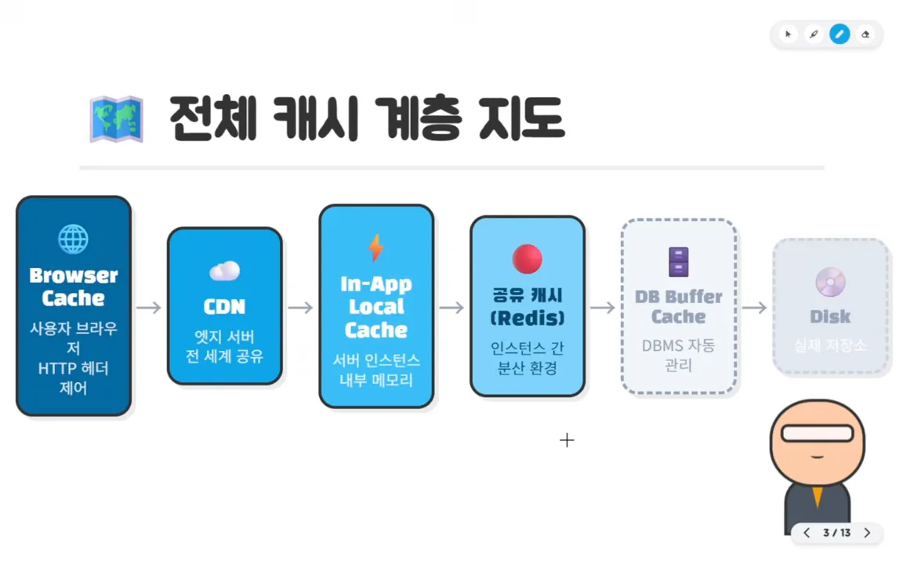
백엔드 개발자는 로컬 캐시와 Redis에, 프론트엔드 개발자는 브라우저 캐시에 익숙하죠. 발표자는 이 전체를 한 번에 보고 계층마다 맞는 데이터를 두는 '풀스택 캐시'를 목표로 삼자고 해요. 원칙은 하나예요. 요청은 사용자와 가까운 곳에서 끝낼수록 좋아요. 사용자가 느끼는 응답이 빨라지고, 뒤쪽 서버 자원도 쓰지 않으니까요.
왜 한 계층만 쓰면 안 될까요
슬라이드는 이유를 네 칸으로 정리해요. 왼쪽 위 '변경 빈도'는 정적 이미지는 몇 달씩 안 바뀌고 장바구니는 초 단위로 바뀐다는 이야기예요. 오른쪽 위 '공유 범위'는 국가 코드는 모든 사용자가, 세션은 한 사람만 쓴다는 차이예요. 아래 두 칸은 용량과 네트워크 비용(이미지는 MB(Megabyte), 코드 목록은 KB(Kilobyte)), 최신성 요구(주식 시세는 실시간, 공지사항은 5분 늦어도 괜찮음)예요.
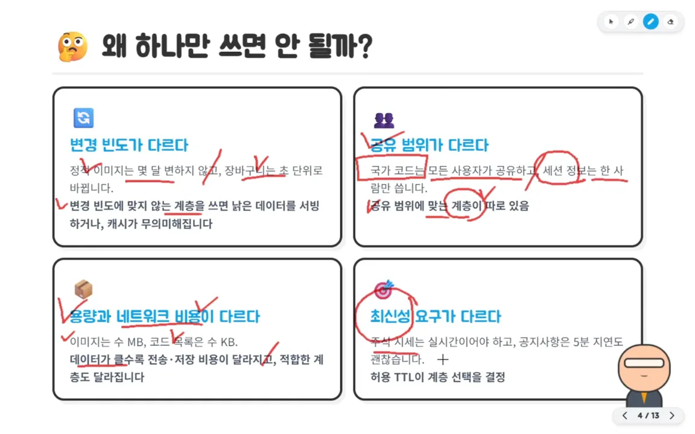
계층별로 무엇을 두고, 무엇을 조심할까요
발표자가 계층마다 짚은 내용을 한 표로 모았어요.
| 계층 | 어디에 저장하나요 | 주로 두는 것 | 조심할 점 |
|---|---|---|---|
| 브라우저 캐시 | 사용자 PC(Personal Computer)의 브라우저 | CSS(Cascading Style Sheets), JS(JavaScript), 이미지, 폰트 | 사용자마다 따로 있어요. 갱신은 파일명 해시나 URL(Uniform Resource Locator) 버전으로 해요 |
| CDN | 사용자와 가까운 엣지 서버 | 이미지, 영상, 게임 설치·패치 파일 | 배포만 하고 퍼지하지 않으면 옛 파일이 나가요. 동적 콘텐츠는 개인정보가 섞일 수 있어요 |
| 로컬 캐시 | 서버 인스턴스 메모리 (Caffeine, Guava) | 국가 코드, 공통 코드, 설정값 | 서버마다 따로 있어서 여러 대일 때 동기화 문제가 생겨요 |
| 공유 캐시 | 중앙 Redis | 세션, 장바구니, 사용자별 상태 | 네트워크 왕복 비용이 있어 로컬보다 느려요. TTL(Time To Live) 없이 쓰면 메모리가 차요 |
공유 캐시는 TTL로 만료 시간을 정하고, 에빅션 정책으로 오래된 데이터를 밀어내요.
요청은 위에서 아래로, 데이터는 아래에서 위로
Cache Fill Flow 슬라이드의 왼쪽 열은 요청이 내려가는 길이에요. 브라우저에서 미스가 나면 CDN, 다시 미스면 로컬 캐시, Redis를 거쳐 마지막으로 DB를 조회해요. 오른쪽 노란 열은 거꾸로 올라오는 길이에요. DB에서 읽은 값을 Redis에 저장하고, 로컬 캐시와 CDN, 브라우저에 차례로 채워요. 그래서 첫 요청은 느려도 다음 요청부터는 가장 가까운 계층에서 바로 끝나요.
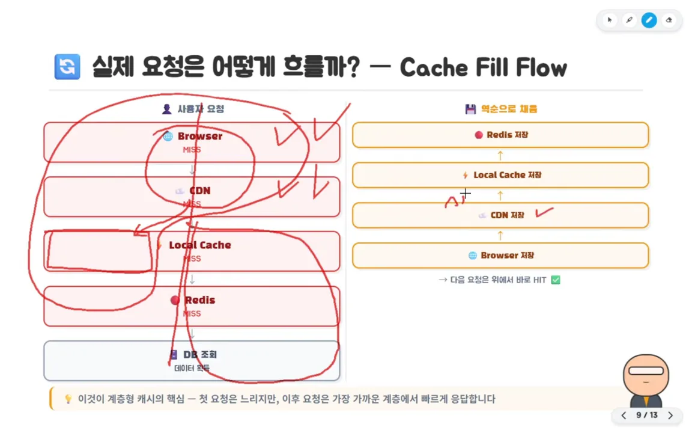
현실에서는 갈래가 나뉘어요. 정적 리소스는 브라우저·CDN에서 미스가 나면 로컬 캐시가 아니라 웹 서버 디렉터리나 S3(Amazon Simple Storage Service) 같은 스토리지로 가요. 동적 데이터는 보통 로컬 캐시부터 DB까지의 구간을 써요. 덧붙여 CloudFront는 API(Application Programming Interface) 앞에도 많이 세우는데, 캐시 만료 시간을 0으로 둬서 캐싱은 하지 않고 아마존의 전용 통신망만 타게 하려는 목적이에요.
실무에서는 데이터마다 계층을 골라요
실무 선택 슬라이드는 데이터 네 종류에 계층 배지를 붙였어요. 이미지·CSS·JS는 Browser Cache와 CDN, 공지사항·배너는 Redis(TTL 5~10분이면 충분), 권한 정보·메뉴는 Local Cache와 Redis를 함께, 국가 코드·공통 코드는 Local Cache만이에요. 국가 코드는 거의 바뀌지 않아서 서버 간 동기화 문제가 없으니 로컬 캐시가 가장 효율적이에요.
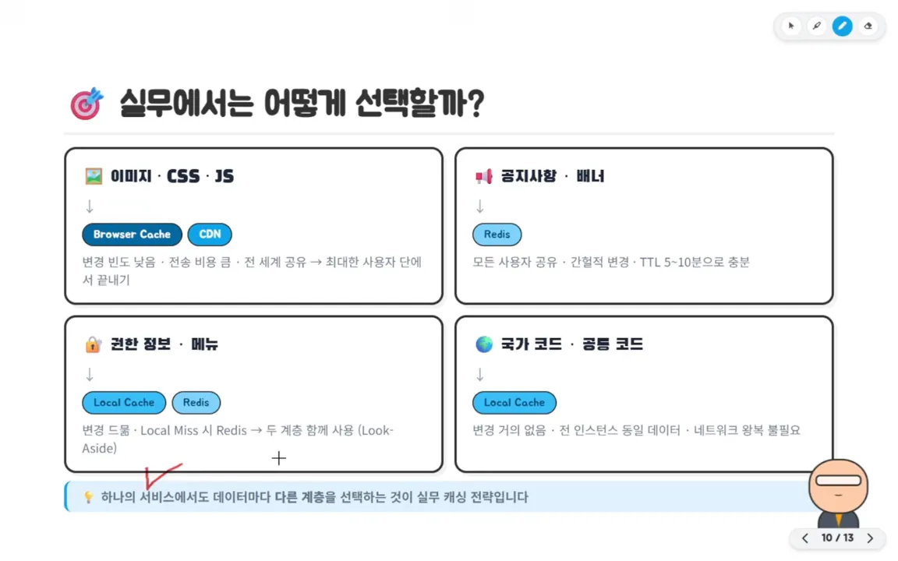
반대로 자주 하는 실수 세 가지도 있어요. CSS를 매번 내려받는 것(Cache-Control 헤더 하나로 해결), 바뀌지 않는 공통 코드까지 전부 Redis로 조회하는 것(로컬 캐시로 충분), TTL 없이 캐시를 계속 쌓는 것이에요. 발표자는 여기에 캐시가 만료된 순간 요청이 한꺼번에 원본 DB로 몰리는 캐시 스탬피드도 덧붙여요.
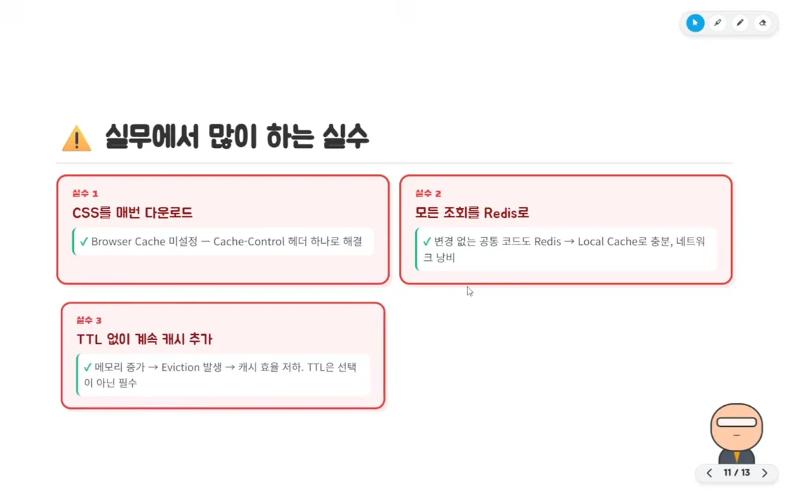
브라우저 캐시(HTTP 캐시)는 이렇게 움직여요
두 번째 강의는 사용자와 가장 가까운 브라우저 캐시를 파고들어요. 정식 이름은 HTTP(HyperText Transfer Protocol) 캐시예요. HTML(HyperText Markup Language), CSS, JS, 이미지, 폰트처럼 무거운 정적 리소스의 사본을 브라우저에 두고 재사용하는 개념이에요. 서버는 같은 파일을 다시 보내지 않아도 되고, 사용자는 네트워크로 받아오는 시간을 아껴요. 대신 서버에서 파일이 바뀌면 옛 사본을 버리고 새로 받아야 해요. 결국 사본 재사용과 최신성을 함께 지키는 구조를 짜는 게 이 강의의 주제예요.
동작 흐름
발표자는 화이트보드에 브라우저와 웹 서버를 그려 놓고 순서대로 번호를 매겨요. 다섯 단계를 정리하면 아래 그림과 같아요.
sequenceDiagram
participant B as 브라우저
participant S as 웹 서버
B->>S: ① 리소스 요청 (HTML, CSS, JS, 이미지)
S-->>B: 응답 + 캐시 사용 여부, 유효 기간, 재검증 방법
Note over B: ② 사본 저장 (메모리 또는 디스크)
Note over B: ③ 다음 요청은 사본 재사용, 서버 요청 없음
Note over B: ④ 유효 기간 만료 또는 재검증 설정
B->>S: ⑤ 재검증 요청 (ETag 또는 수정 시각)
alt 바뀌지 않음
S-->>B: 304 Not Modified (본문 없음)
else 바뀜
S-->>B: 200 OK + 새 리소스
end
화이트보드의 완성본을 보면 아래쪽 빨간 글씨로 설정이 두 갈래로 나뉘어 있어요. ① 유효 기간은 Cache-Control(HTTP/1.1)과 Expires(HTTP/1.0), ② 재검증 기준은 ETag(태그 기준)와 Last-Modified(시간 기준)예요. 사본을 메모리에 둘지 디스크에 둘지는 브라우저가 리소스 크기나 변경 가능성을 보고 알아서 정해요.
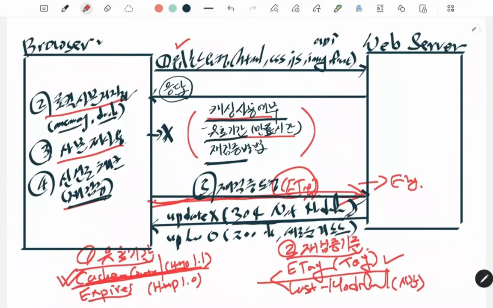
① 유효 기간: Cache-Control과 Expires
왼쪽 카드의 Cache-Control은 HTTP/1.1부터 지금까지 표준이에요. max-age=3600처럼 받은 시점부터 몇 초 동안 유지할지 상대 시간으로 적어요. 오른쪽 Expires는 HTTP/1.0 시절 방식이고, 특정 날짜·시각까지라는 절대 시간을 써요. 지금도 둘 다 쓸 수 있지만, 슬라이드 아래 문장처럼 Cache-Control이 있으면 Expires는 무시돼요.
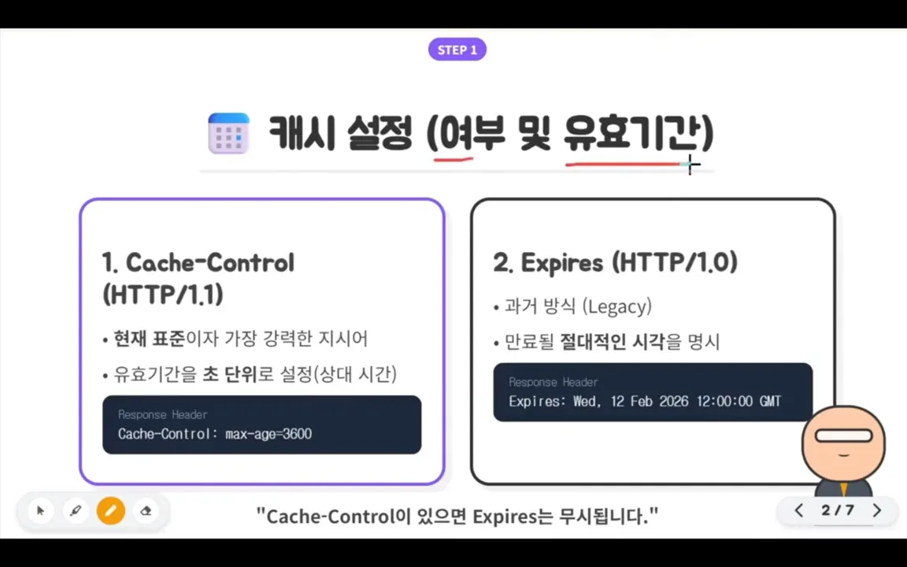
② 재검증: ETag와 Last-Modified
재검증은 조건부 요청으로 해요. 표의 가운데 열이 내용 기준(ETag)이에요. 서버가 ETag: "abc123"을 주면, 브라우저는 재검증 때 If-None-Match: "abc123"으로 되물어요. 오른쪽 열은 시간 기준으로, Last-Modified로 받은 날짜를 If-Modified-Since로 돌려보내요. 값이 같으면 본문 없이 304가 와요. 둘 다 있으면 ETag가 우선이에요. 슬라이드 아래 메모처럼 ETag는 내용이 바뀌면 바로 달라져서 시간 기준보다 정밀해요.
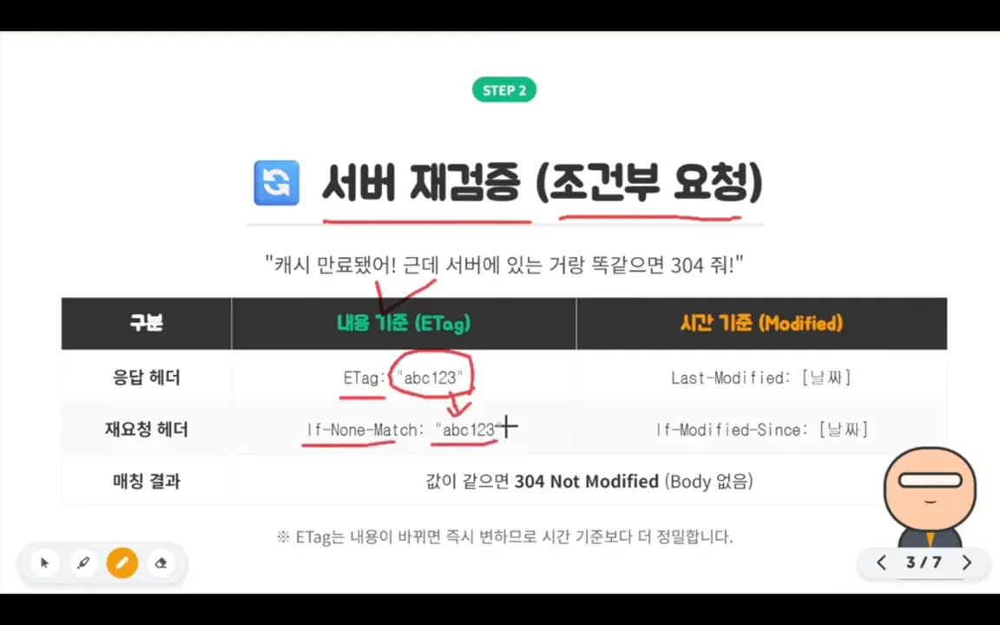
Cache-Control 옵션 총정리
왼쪽 카드는 '어디에 저장하나'예요. public은 브라우저뿐 아니라 CDN·프록시에도 저장 가능, private는 개인화된 응답이라 브라우저에만, no-store는 아예 저장 금지예요. 오른쪽 카드는 '언제 재검증하나'예요. 이름이 헷갈리는 no-cache는 캐시를 쓰지 말라는 게 아니라 저장은 하되 쓸 때마다 재검증하라는 뜻이에요. must-revalidate는 만료되면 반드시 재검증하라는 옵션이에요. 프록시나 CDN 같은 공유 캐시는 원래 서버 연결이 실패하면 오래된 응답이라도 내주는 경우가 있는데, 그것까지 막아요. immutable은 유효 기간 동안 절대 안 바뀌니 재검증 자체를 하지 말라는 뜻이에요. 강력 새로고침처럼 브라우저가 기간 안에도 재검증을 보내는 경우를 막아 줘요.
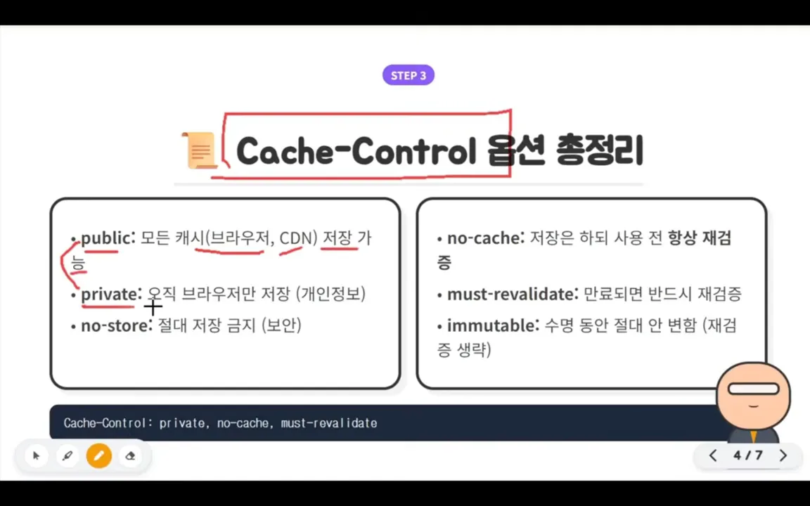
네이버는 어떻게 설정했을까요
발표자는 모바일 네이버를 열고 개발자 도구의 Network 탭에서 Cache-Control 열을 확대해요. 대부분 max-age=31536000이고 중간에 2592000, 7776000이 섞여 있어요. 계산기로 바꿔 보면 31536000초는 1년, 2592000초는 30일이에요. ETag 열은 거의 비어 있고 Last-Modified만 채워져 있어요. 반면 index 페이지 한 줄은 no-cache, no-store, must-revalidate를 모두 걸어 뒀어요. no-store 하나로도 되지만 안전장치를 겹겹이 둔 거예요.
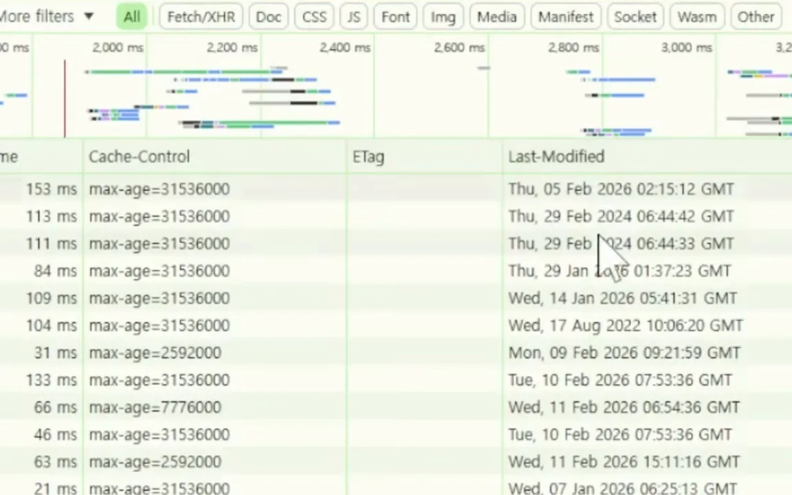
요즘 대세는 핑거프린팅
네이버 파일명에는 의미 없는 숫자와 문자가 붙어 있었죠. 이게 파일 지문, 즉 핑거프린팅이에요. 슬라이드처럼 빌드할 때 main.js를 main.a1b2c3.js로 바꿔요. 내용이 바뀌면 파일명이 바뀌고, 파일명이 다르면 브라우저는 완전히 다른 리소스로 인식해요. 재검증 메커니즘이 필요 없고, 배포하는 즉시 새 파일이 반영돼요.
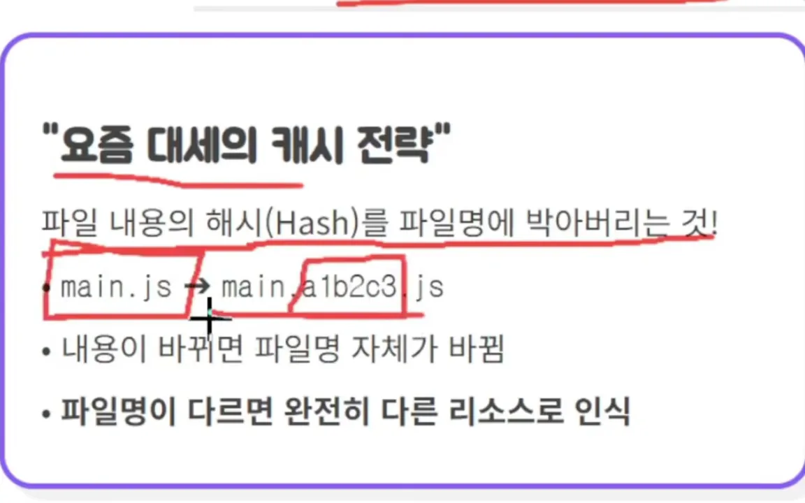
마지막 슬라이드가 실무 조합이에요. 왼쪽, 이름이 고정된 index.html은 no-cache로 매번 재검증해서 304나 새 응답을 받아요. 오른쪽, JS·CSS·이미지 같은 정적 자산은 핑거프린팅을 적용하고 immutable, max-age=31536000을 걸어 서버에 묻지 않고 100% 로컬 캐시를 써요. 새 index.html이 새 파일명을 가리키니 업데이트도 바로 반영돼요.
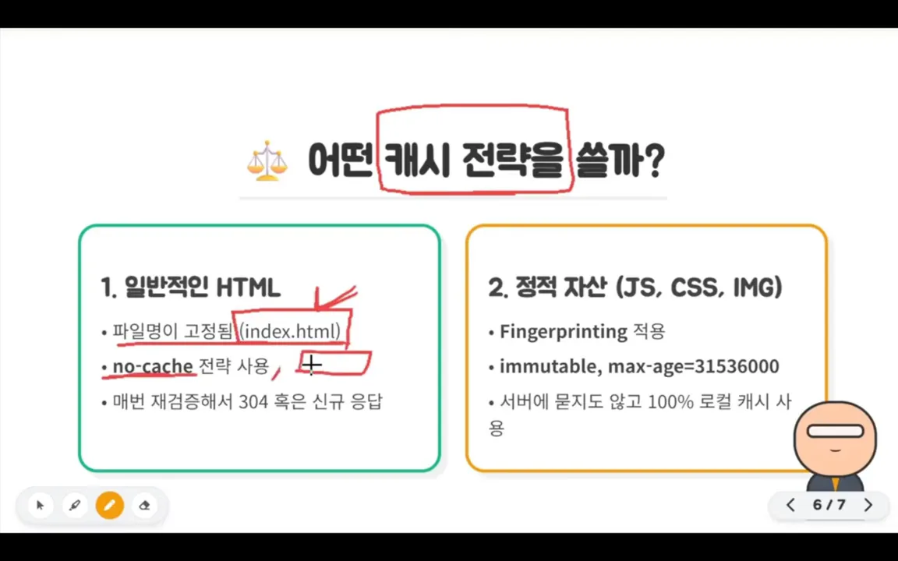
메모리 계층과 레이턴시 숫자
세 번째 강의는 캐시가 왜 효과가 있는지를 하드웨어 숫자로 보여 줘요. CPU(Central Processing Unit)는 아주 빠르고 디스크는 아주 느려요. 그 간극을 메우려고 저장 장치를 여러 층으로 둔 게 메모리 계층 구조예요. 피라미드 위쪽(CPU 레지스터, L1, L2/L3 캐시)으로 갈수록 빠르지만 작고 비싸고, 아래쪽(RAM, SSD, HDD(Hard Disk Drive))으로 갈수록 크고 싸지만 느려요.
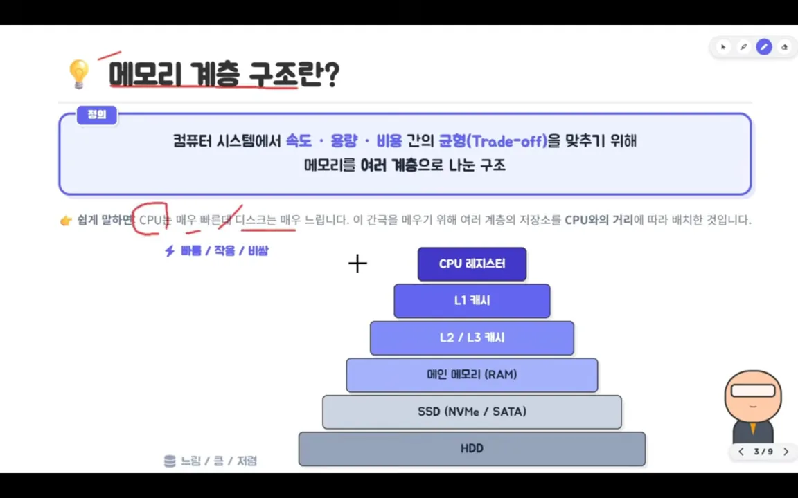
그래서 빨리 조회해야 할 것은 CPU 가까이, 크고 자주 안 보는 것은 디스크 쪽에 둬요. 레지스터와 L2 캐시가 빠르다고 전부 그걸로 만들 수는 없고, 하드디스크가 싸다고 전부 하드디스크로 만들면 속도가 안 나오니까요.
계층별 레이턴시
표의 노란 줄이 기준인 RAM(약 100ns)이에요. 그 아래로 NVMe SSD 약 20µs, SATA(Serial Advanced Technology Attachment) SSD 약 100µs, HDD 약 5ms예요. 나노초(ns), 마이크로초(µs), 밀리초(ms)는 각각 1,000배씩 차이 나요. 그래서 오른쪽 열을 보면 NVMe도 RAM보다 약 200배, SATA SSD는 약 1,000배, HDD는 약 5만 배 느려요. 슬라이드 아래쪽에 적힌 대로 이 숫자는 Peter Norvig, Jeff Dean, Colin Scott가 정리한 자료를 기반으로 한 대표값이고, 실제 하드웨어와 접근 패턴에 따라 달라져요.
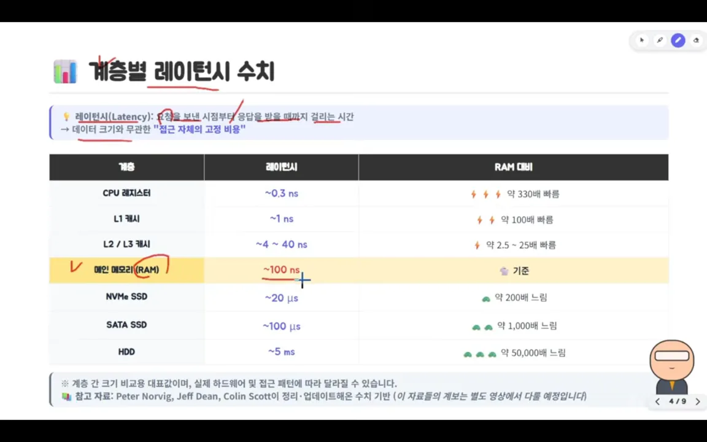
나노초는 감이 잘 안 오니 L1 캐시 1ns를 1초로 늘려 봐요. 표의 오른쪽 열처럼 RAM은 1분 40초, NVMe SSD는 5시간 30분, SATA SSD는 28시간, HDD는 약 2개월이에요. CPU 입장에서 RAM을 기다리는 건 1~2분이지만 HDD를 기다리는 건 두 달 휴가예요.
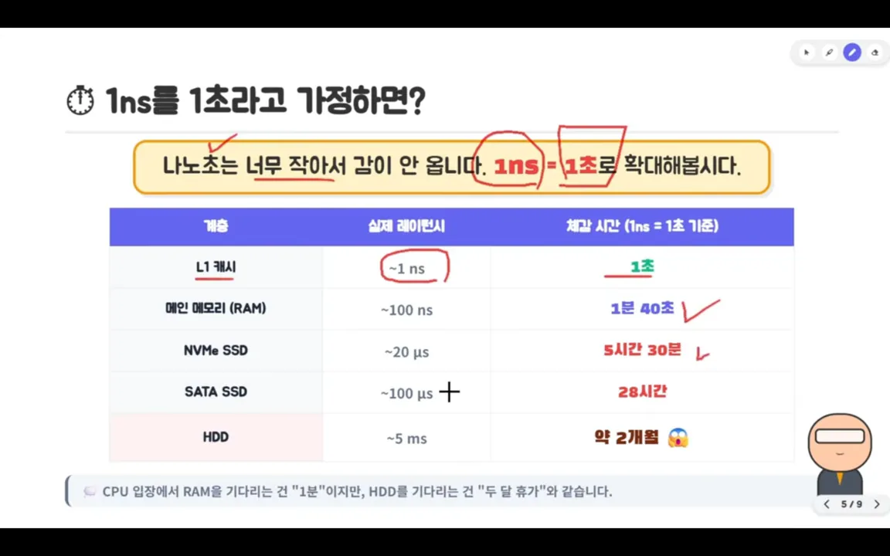
랜덤 읽기와 순차 읽기는 달라요
앞의 숫자는 모두 랜덤 액세스 기준이에요. 왼쪽 카드의 랜덤 액세스는 흩어진 위치로 매번 새로 점프해서 레이턴시(NVMe 약 20µs/회)가 성능을 좌우해요. 오른쪽 순차 읽기는 한 번 접근한 뒤 쭉 스트리밍해서 처리량(NVMe 초당 수 GB(Gigabyte))이 좌우해요. 같은 NVMe SSD라도 작은 랜덤 읽기 1만 번과 큰 파일 연속 읽기는 성능이 수십 배 차이 나요. 발표자는 DB 인덱스 설계가 중요한 이유가 여기 있다고 해요.
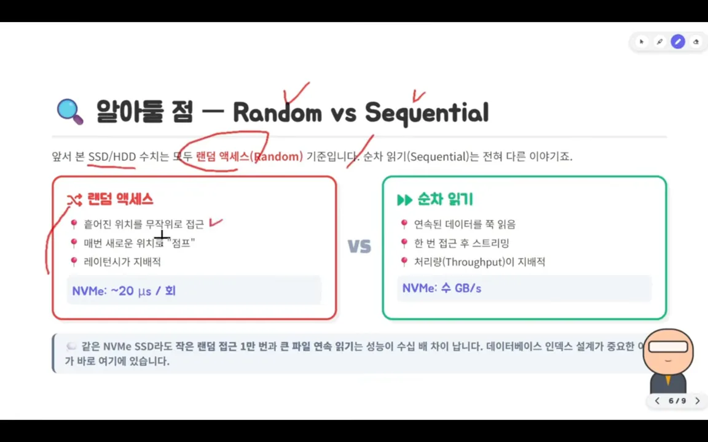
실무에서 자주 하는 오해도 짚어요. "최신 SSD 썼으니 충분히 빠르겠지"라는 생각이에요. NVMe가 많이 빨라진 건 맞지만 여전히 RAM보다 약 200배 느려요. 그래서 SSD로 바꿨다고 버퍼 캐시나 Redis 같은 메모리 캐시가 필요 없어지지 않아요. 자주 참조하는 데이터를 위쪽 계층, 즉 메모리에 두는 게 성능의 핵심이에요.
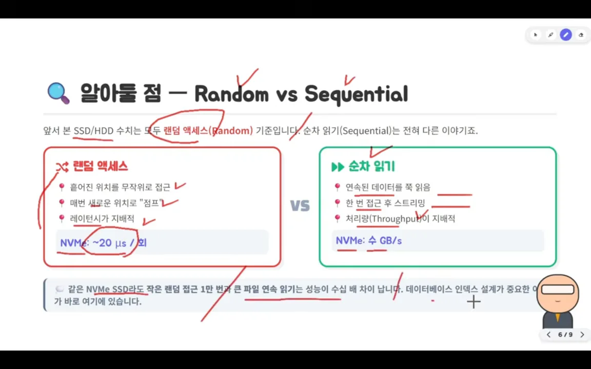
읽기 성능과 쓰기 성능, 레이어로 나눠 답하기
네 번째 강의는 면접 질문 하나로 시작해요. "성능 향상 전략을 읽기와 쓰기로 나눠서 말해 보세요." 정답이 정해진 문제가 아니라서 답하는 방식에서 역량이 드러나요.
키워드를 나열하면 감점이에요
슬라이드의 말풍선 세 개가 흔한 답이에요. "캐시 쓰면 빨라지고요", "인덱스 걸고... 샤딩도 하고...", "레디스? 카프카? 그런 거 쓰면 됩니다". 발표자는 이렇게 키워드만 던지면 감점이라고 해요. 어느 레이어에서 무엇을 왜 쓰는지 구조적으로 말해야 해요.
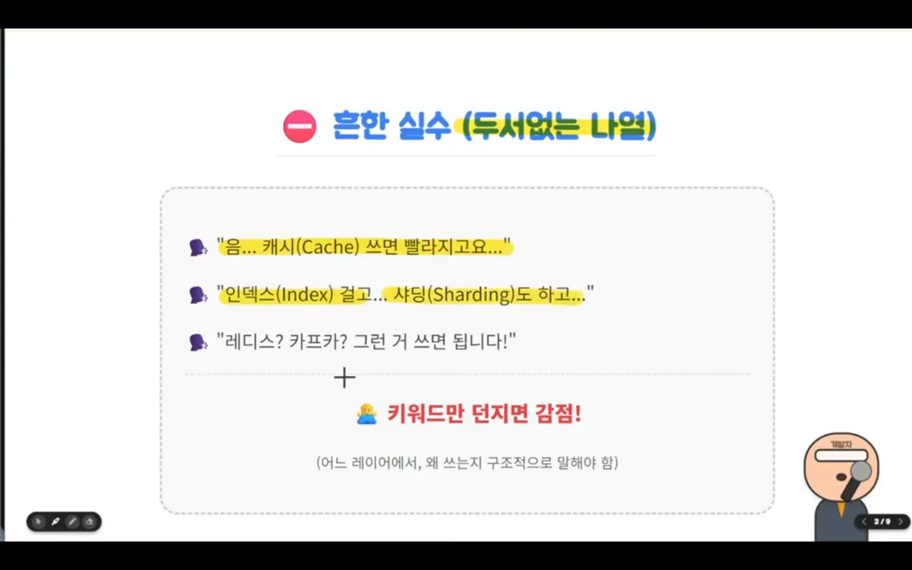
추천하는 방법은 Layered Approach예요. 요청이 들어오고 나가는 Network/Web, 중간 처리를 하는 Application, 저장소인 Database로 나눠 말해요. 필요하면 전체를 아우르는 아키텍처 레이어를 더할 수도 있어요. 발표자는 이렇게 나누면 내용이 조금 부실해도 체계적이고 고민한 사람처럼 보이고, 본인 기억에도 오래 남는다고 해요.
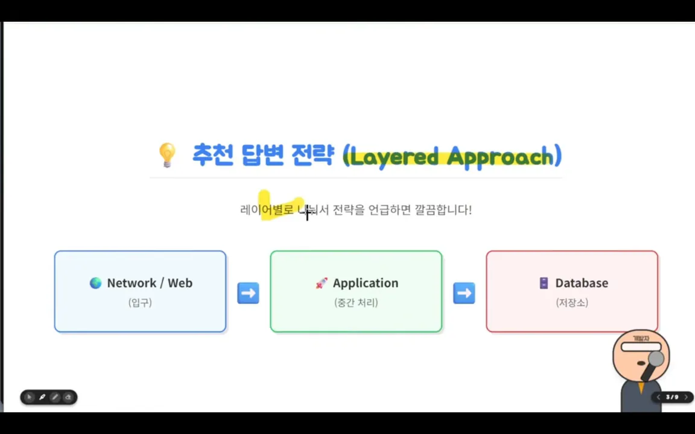
읽기 최적화
세 칸 중 Network/Web에는 HTTP Cache, CDN, HTTP/2·HTTP/3가 있어요. 브라우저가 요청 자체를 안 하게 만드는 게 첫째고, CDN이 가장 강력해요. 요즘은 API 같은 동적 리소스도 CDN을 태우는 경우가 많아요. HTTP/2는 거의 다 쓰고, HTTP/3는 브라우저는 지원하지만 서버·네트워크 장비 호환성이 아직 덜 갖춰졌다고 봐요. App/Cache에는 Redis 같은 분산 캐시와 로컬 캐시가 있어요. Database에는 같은 데이터를 여러 서버에 복제해 읽기를 나누는 레플리케이션, 인덱싱, 테이블을 날짜·지역 등으로 나누는 파티셔닝, 미리 계산해 둔 통계 테이블이 있어요.
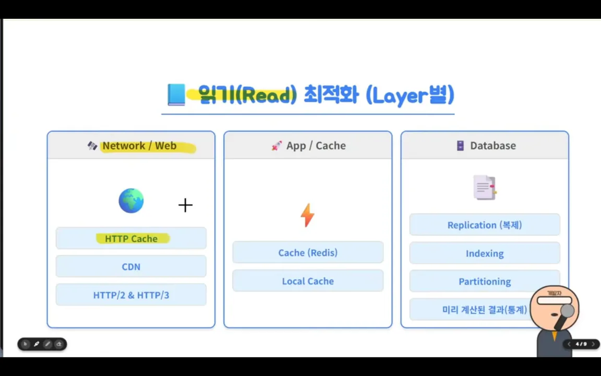
쓰기 최적화
쓰기는 레이어 이름이 조금 달라요. App/Broker에는 Message Queue(Kafka)와 비동기 처리가 있어요. 쓰기 요청을 DB에 바로 꽂지 않고 큐에 쌓아 두고 사용자에게는 빨리 응답해요. DB Arch에는 데이터를 여러 노드로 나눠 쓰기 부하를 분산하는 샤딩, 파티셔닝, 최종 일관성이 있어요. 최종 일관성은 강한 일관성을 잠시 내려놓는 대신 성능과 확장성을 얻는 트레이드오프예요. DB Internal에는 여러 건을 묶어 디스크·네트워크 왕복을 줄이는 배치 쓰기와, 불필요한 인덱스를 줄이는 인덱스 최적화가 있어요.
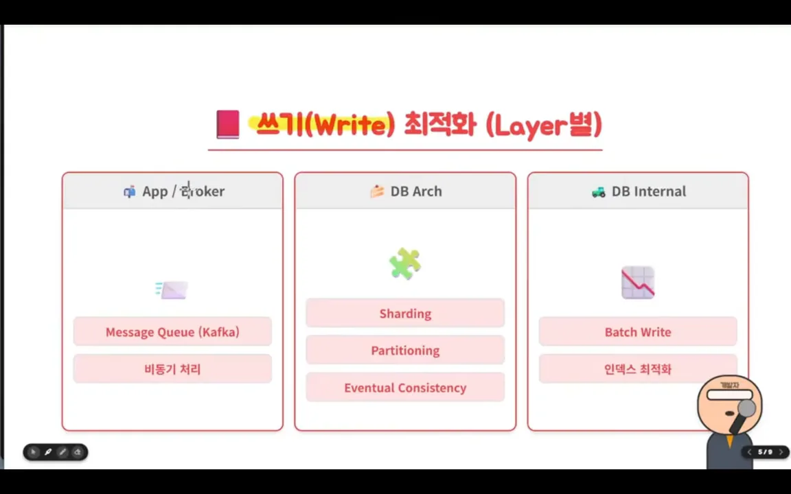
튜닝 전에 따질 세 가지
발표자가 다른 회사 시스템을 튜닝해 보며 얻은 기준이에요. 첫째 줄, 병목 찾기가 최우선이에요. 20%의 병목이 80%의 성능을 잡아먹는 느낌이라서, 추측하지 말고 슬로우 쿼리나 APM(Application Performance Monitoring)으로 측정해야 해요. 둘째 줄, 트레이드오프에 은탄환은 없어요. 대표 예가 인덱스예요. 탐색 경로를 줄여 읽기를 빠르게 하지만, 쓸 때마다 인덱스를 갱신하고 정렬해야 해서 쓰기는 느려져요. 셋째 줄, 읽기·쓰기 비율을 봐요. 대부분 서비스는 읽기가 압도적이라 읽기 최적화 효과가 커요.
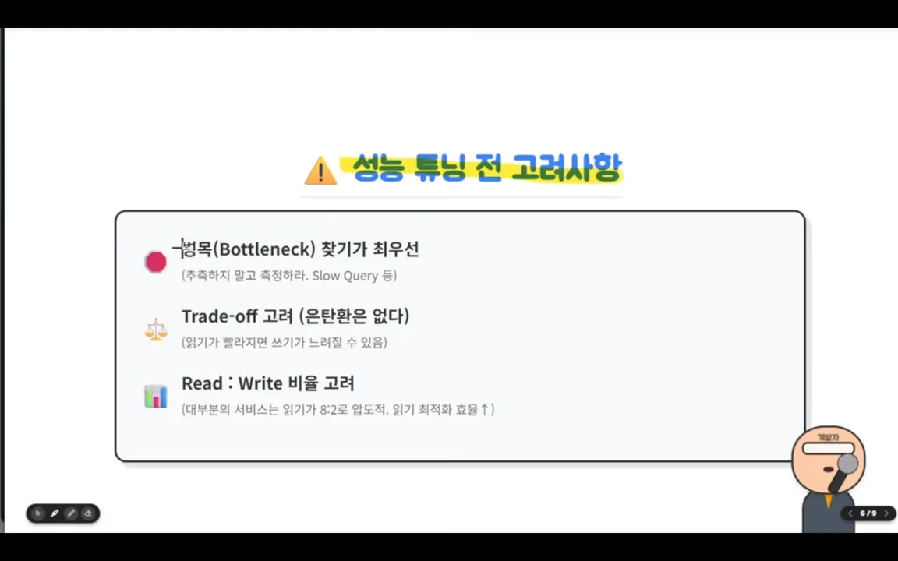
모범 답안과 꼬리 질문
모범 답안은 세 문장이에요. 읽기는 Web(CDN), App(캐싱), DB(복제·인덱싱) 계층별로 최적화하고, 쓰기는 App(비동기 큐), DB(샤딩·배치 처리)로 부하를 분산하고, 무엇보다 튜닝 전에 병목을 파악하고 읽기·쓰기 비율에 따른 트레이드오프를 고려한다는 거예요.
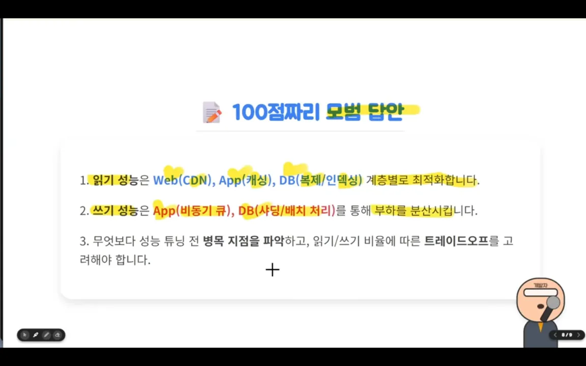
답을 잘하면 꼬리 질문이 따라와요. 레플리케이션 지연으로 마스터와 슬레이브 데이터가 안 맞을 때 어떻게 하나요? CQRS(Command Query Responsibility Segregation) 패턴은 무엇인가요(쓰기와 읽기의 책임을 나누는 아키텍처)? 캐시 전략 Write-Back과 Write-Through의 차이는(쓰기 성능 대 데이터 일관성)? 영상은 답을 주지 않고 직접 찾아보라고 해요.
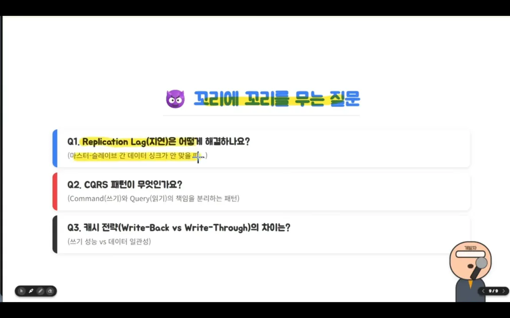
캐시와 메시지 큐, 언제 무엇을 쓸까요
다섯 번째 강의도 면접 질문이에요. "트래픽이 폭주해서 서버가 느려졌습니다. 캐시와 MQ 중 무엇을 도입하시겠습니까?"
슬라이드의 두 답, "Redis가 빠르니까 캐시를 쓰겠습니다", "Kafka가 핫하니까 도입하면 되지 않을까요?"는 지엽적인 답이에요. 발표자는 두 가지를 지적해요. Redis와 Kafka는 캐시와 MQ(Message Queue)라는 개념을 구현한 제품 이름일 뿐이니 개념을 먼저 말해야 하고, 원인(병목)을 먼저 찾아야 처방을 고를 수 있어요. 읽기가 문제인지 쓰기가 문제인지에 따라 답이 달라지니까요.
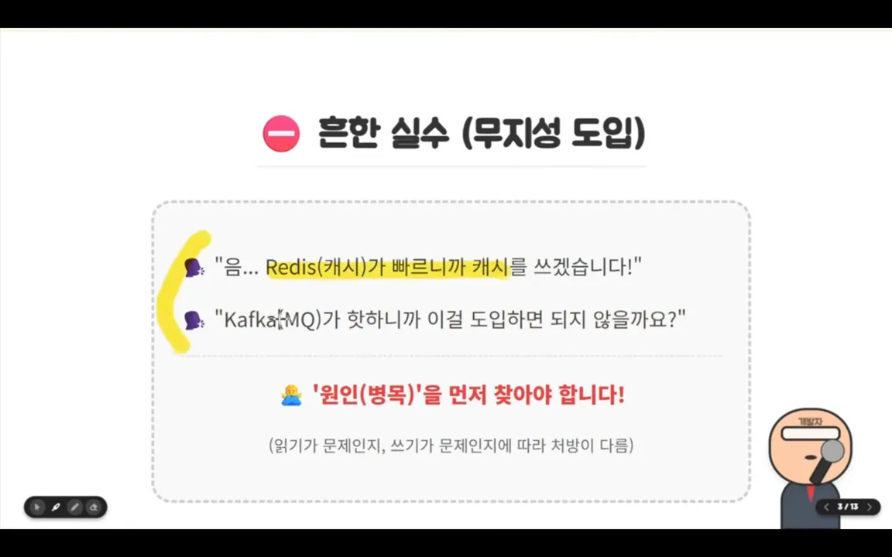
캐시는 읽기, 메시지 큐는 쓰기
캐시의 핵심은 "똑같은 일 또 하지 마"예요. 자주 찾는 데이터나 복잡한 계산 결과를 빠른 저장소에 두고 재사용해요. 주문마다 새로 요리하지 않고 미리 만들어 둔 음식을 집어 가는 뷔페와 같아요. 메시지 큐의 핵심은 "나중에 해"와 디커플링이에요. 요청을 대기열에 넣고 비동기로 처리하면서 요청한 쪽에는 바로 응답해요. 맛집 대기표처럼 일단 접수만 받고 손님을 보내면 새 손님을 계속 받을 수 있어요. 덤으로 시스템 사이의 결합도도 낮아져요.
둘의 자리는 시스템 구조 슬라이드에 나와요. 왼쪽 읽기 경로에서는 캐시(Redis)가 User와 DB 사이, 즉 DB 앞단에 서서 DB 부하를 막아요. 오른쪽 쓰기 경로에서는 MQ(Kafka)가 API Server와 Worker 사이에 서서 쓰기 작업을 비동기로 넘겨요. 워커는 큐에서 꺼낸 일로 DB에 저장하거나 알림을 보내거나 외부 시스템을 불러요.
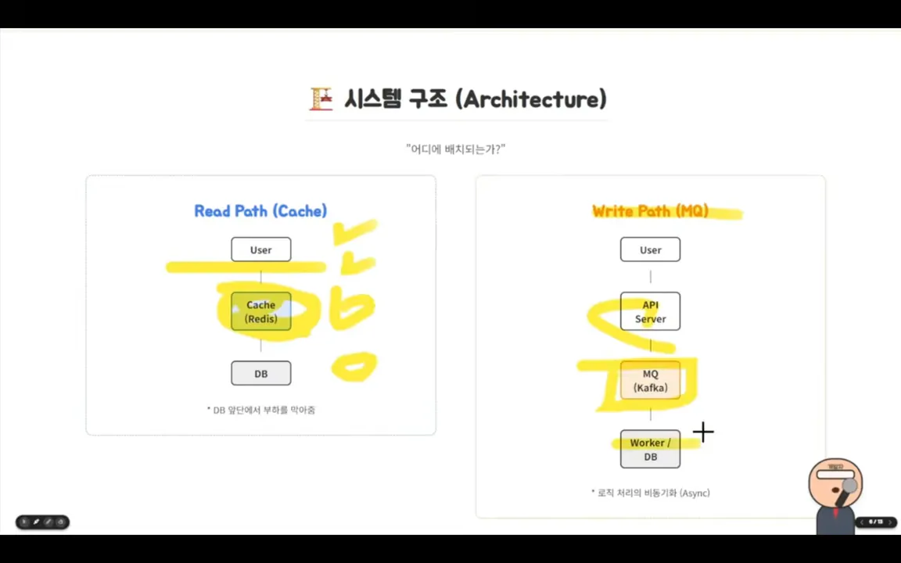
각각 어떻게 쓰나요
캐시의 표준 패턴은 Look-Aside예요. 슬라이드의 세 줄 그대로, 데이터가 캐시에 있는지 먼저 보고, 있으면(히트) 바로 반환하고, 없으면(미스) DB에서 조회해 캐시에 저장한 뒤 반환해요. 읽기 요청이 많은 서비스의 기본형이에요.
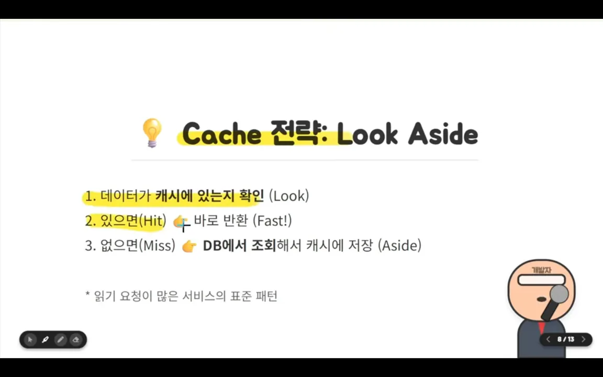
MQ는 Async Worker 패턴이에요. 클라이언트 요청을 받으면 MQ에 넣고 바로 OK를 응답해요. 백그라운드 워커가 MQ에서 메시지를 하나씩 꺼내 이메일 발송, 썸네일 생성 같은 무거운 일을 처리해요. 슬라이드 아래 메모처럼 시스템 과부하를 막는 스로틀링 효과도 있어요.
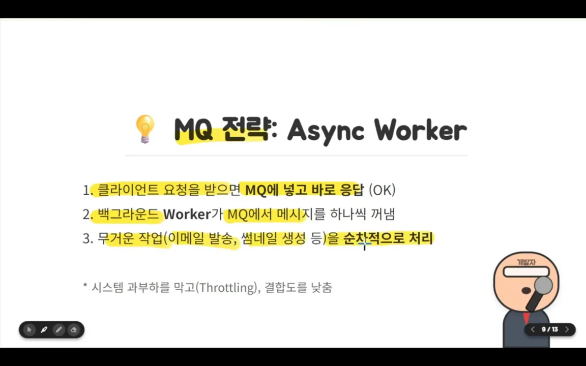
한 눈에 정리 표는 네 줄이에요. 주 목적은 캐시가 읽기 성능, MQ가 쓰기·로직 성능이에요. 핵심 원리는 재사용 대 비동기·버퍼링, 위치는 DB 앞단 대 API 서버와 워커 사이, 대표 기술은 Redis·Memcached 대 Kafka·RabbitMQ·SQS(Amazon Simple Queue Service)예요. 발표자는 진단도 단순하게 정리해요. 조회(select) 쿼리가 너무 많아 DB가 느리면 캐시, 주문·결제처럼 insert/update가 복잡해 느리면 MQ예요.
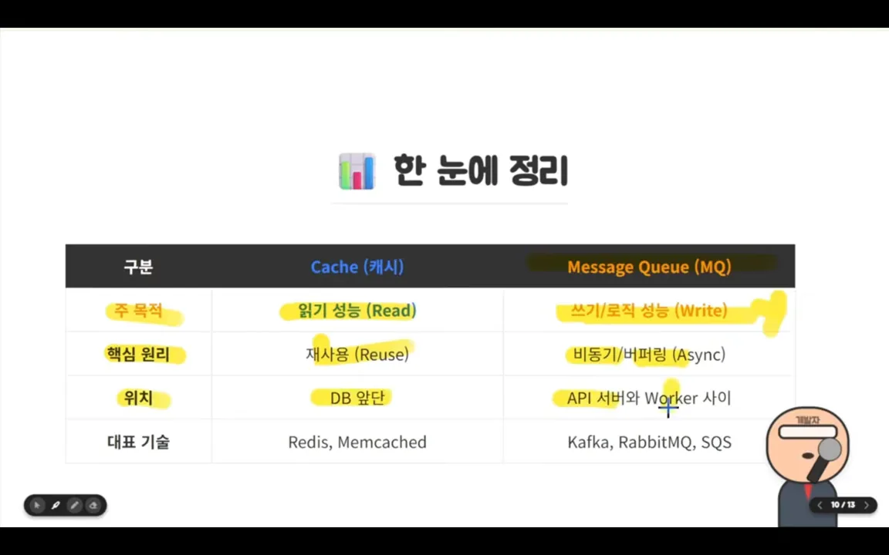
도입 전에 따질 것
도입한다고 모든 게 해결되지는 않아요. 왼쪽 카드의 캐시는 DB와 캐시 값이 달라질 수 있는 데이터 정합성(Stale Data) 문제와, 만료 시간·갱신 정책을 관리하는 비용이 있어요. 오른쪽 카드의 MQ는 비동기라서 에러 처리가 어려워지고 전체 흐름 설계가 복잡해지며, 처리가 밀리면 사용자가 결과를 늦게 받아요.
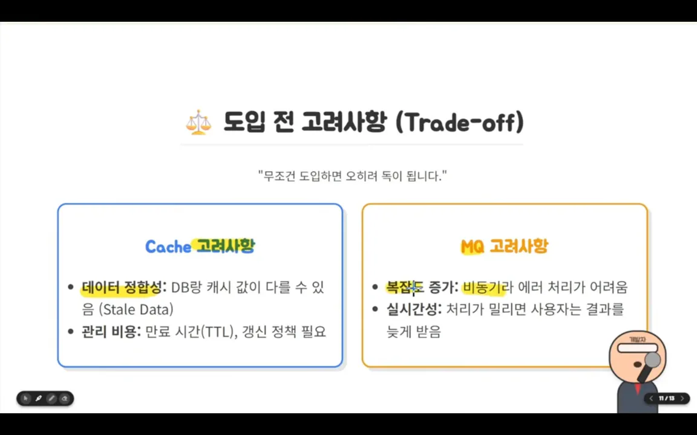
모범 답안은 이래요. 먼저 APM 같은 모니터링 툴로 병목이 읽기인지 쓰기인지 파악하겠다. 조회 쿼리 부하가 원인이면 Redis 같은 캐시로 DB 부하를 줄이겠다. 트래픽 폭주로 처리가 지연되는 거라면 Kafka 같은 MQ로 작업을 비동기로 바꾸고 부하를 조절하겠다. 꼬리 질문으로는 비동기 처리 시 사용자에게 완료 응답을 어떻게 주는지, 캐시 스탬피드가 무엇인지, Redis는 캐시인지 MQ인지가 나올 수 있어요.
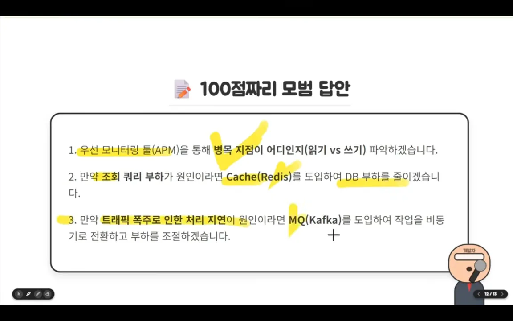
싱글 스레드 Redis가 빠른 이유
여섯 번째 강의부터는 Redis 이야기예요. 출발점은 이 질문이에요. "Redis는 싱글 스레드인데 왜 빠를까? 서버 코어가 8개인데 하나만 쓰면 나머지 7개는 노는 거잖아?" 흔한 답은 "메모리 기반이라서", "락이 없어서"예요. 발표자는 맞는 말이지만 전부는 아니라고 해요.
슬라이드 오른쪽 위 숫자가 반박의 근거예요. Redis 공식 벤치마크로 처리량은 초당 수만~수백만 건, 평균 응답 시간은 1ms 미만이에요. 파이프라인 없이는 초당 약 7만~18만 건, 파이프라인을 쓰면 GET 181만·SET 153만 건이에요. 그래서 핵심 명제는 "싱글 스레드라서 빠른 게 아니라, 싱글 스레드여도 빠르게 설계했다"예요. 맨 아래 카드처럼 Redis가 느려지는 건 대부분 스레드 구조가 아니라 O(N) 연산이나 너무 큰 단일 키 때문이에요.
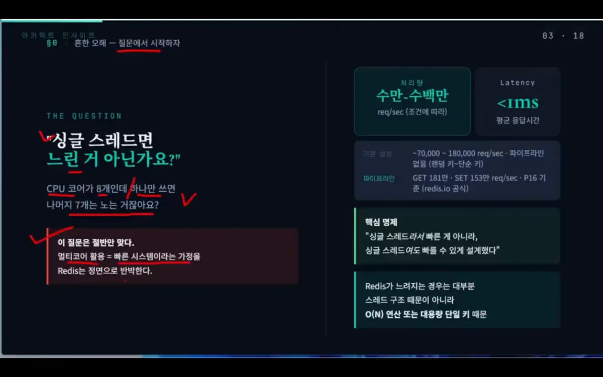
멀티스레드에는 비용이 따라요
스레드 여러 개가 공유 자원(Lock/Mutex, Shared Memory)에 달려들면 오른쪽 네 가지 비용이 생겨요. 스레드를 바꿀 때마다 레지스터·스택·캐시를 저장하고 복원하는 컨텍스트 스위칭, 락을 얻으려고 기다리는 시간, 코어마다 가진 CPU 캐시를 맞추는 캐시 일관성 비용, 경쟁 상태(race condition)예요. 스레드를 늘리면 처리량이 정비례로 는다는 생각은 공유 자원이 없을 때만 맞아요.
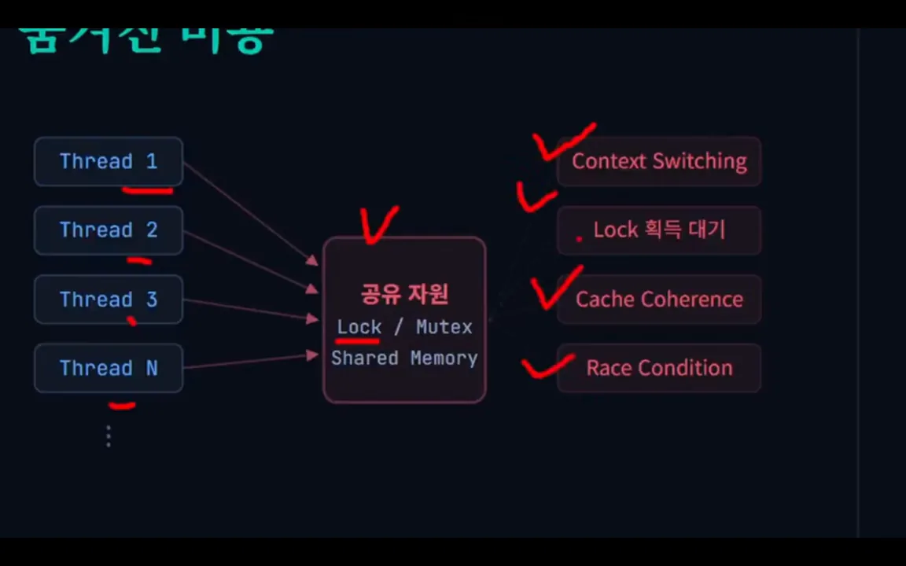
Redis를 만든 antirez는 FAQ(Frequently Asked Questions)와 블로그에서 멀티스레드가 기술적으로 불가능했던 게 아니라 일부러 싱글 스레드를 택했다고 밝혔어요. 이유는 세 가지예요. 첫째, CPU는 병목이 아니었어요. 진짜 병목은 메모리 대역폭과 네트워크 I/O라서 코어를 더 써도 풀리지 않아요. GET 연산이 100ns 이하인데 뮤텍스 락이 최대 50ns라면 오버헤드가 연산의 절반이 될 수 있어요. 둘째, 단순함이 최우선이었어요. 락·데드락이 없다고 가정하면 코드가 근본적으로 단순해져요. 셋째, 얻을 것보다 잃을 것이 많았어요. 리스트 앞에서 빼는 스레드와 뒤에 넣는 스레드를 맞추려면 복잡한 코드가 필요해요. 대신 인스턴스를 여러 개 띄우는 수평 확장을 권해요.
빠른 이유 ① 인메모리
왼쪽 그림에서 전통적인 DB는 Application, Buffer Pool을 지나 디스크 I/O와 Storage까지 내려가요. 버퍼 풀이 있어도 기본은 디스크 구조예요. Redis는 Application에서 RAM으로 바로 가요. 오른쪽 숫자처럼 RAM 접근이 50~100ns인 반면 NVMe SSD는 20~200µs, SATA SSD는 약 0.5ms, HDD는 5~10ms예요. 아래 빨간 카드는 단점이에요. 재시작하면 데이터가 날아갈 수 있어서 RDB(Redis Database) 스냅샷과 AOF(Append Only File) 로그로 디스크에 보관하는 장치를 둬요.
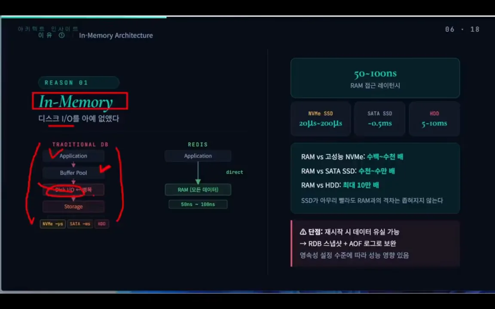
빠른 이유 ② I/O 멀티플렉싱(epoll)
그림은 왼쪽에서 오른쪽으로 네 단계예요. ① 수만 개 클라이언트가 연결돼 있고, ② Redis는 각 소켓의 파일 디스크립터(fd)를 커널에 등록해요. ③ 커널의 epoll이 fd=3, fd=4는 기다리는 중, fd=5는 데이터가 도착해 READY라고 감시해요. ④ 싱글 스레드 이벤트 루프는 epoll_wait()으로 준비된 fd만 받아 명령을 실행하고 응답한 뒤 다시 처음으로 돌아가요. 감시는 커널이 하니 Redis는 감시용 스레드가 필요 없어요.
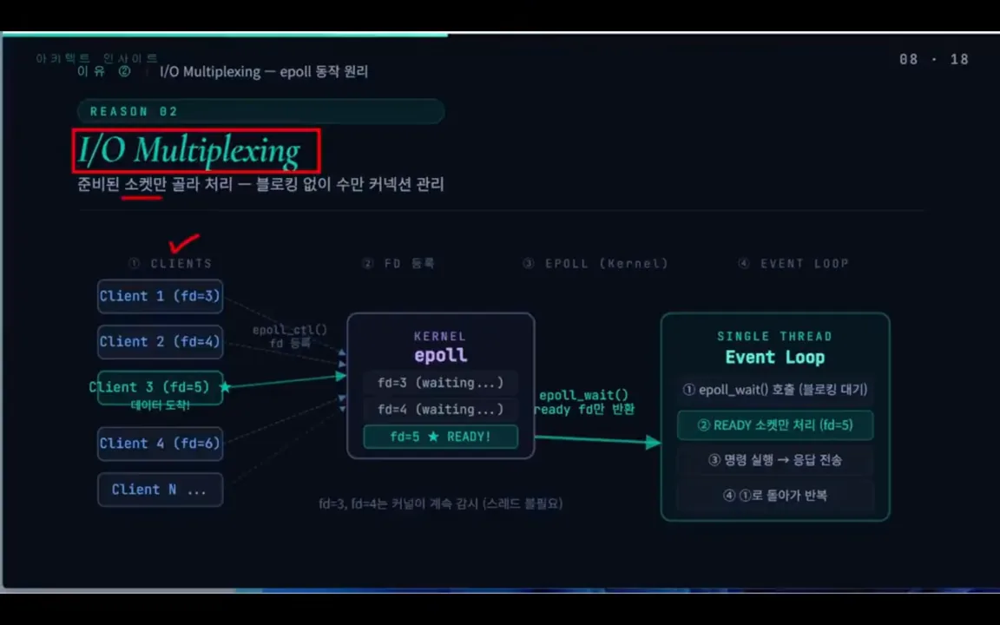
발표자는 식당으로 비유해요. 왼쪽 Blocking 방식은 웨이터(스레드)가 손님 1의 주문을 주방에 넣고 음식이 나올 때까지 기다려요. 그동안 손님 2, 3은 대기해요. 해결하려면 웨이터를 늘려야 해요. 오른쪽 epoll 방식은 웨이터가 한 명뿐이지만 모든 주문을 주방장(epoll)에게 넘기고 "다 된 것만 알려 주세요"라고 해요. 주방장이 "손님 2 요리 나왔어요"라고 하면 그것만 서빙해요.
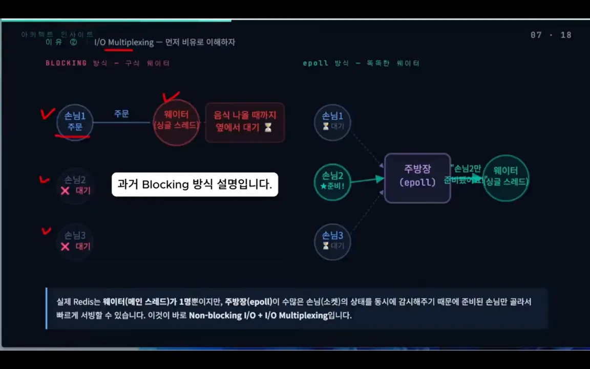
이 구조는 오래된 문제의 해법이기도 해요. 1999년 Dan Kegel이 "서버 한 대로 동시 연결 1만 개를 어떻게 처리할까"라는 C10K 문제를 던졌어요. 연결 하나에 스레드 하나를 붙이면 1만 연결은 1만 스레드라 메모리가 바닥나요. 이벤트 루프와 epoll이면 스레드 하나로 처리해요. 오른쪽 목록처럼 Node.js, Nginx, FastAPI도 같은 원리를 써요.
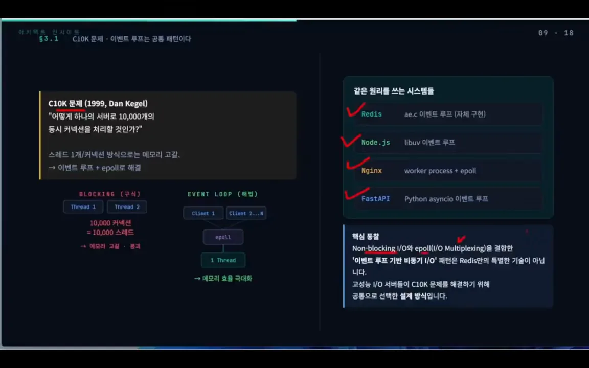
빠른 이유 ③ O(1) 자료구조
그림 왼쪽의 키(user:1001, session:abc, leaderboard 등)를 해시 함수에 넣으면 해시 테이블의 버킷 번호가 바로 나와요. 처음부터 훑을 필요 없이 해당 버킷으로 점프해서 오른쪽의 실제 값(String, Hash, Sorted Set)을 가리켜요. 그래서 키 조회가 O(1)이에요. 해시가 충돌하면 체이닝으로 해결해요.
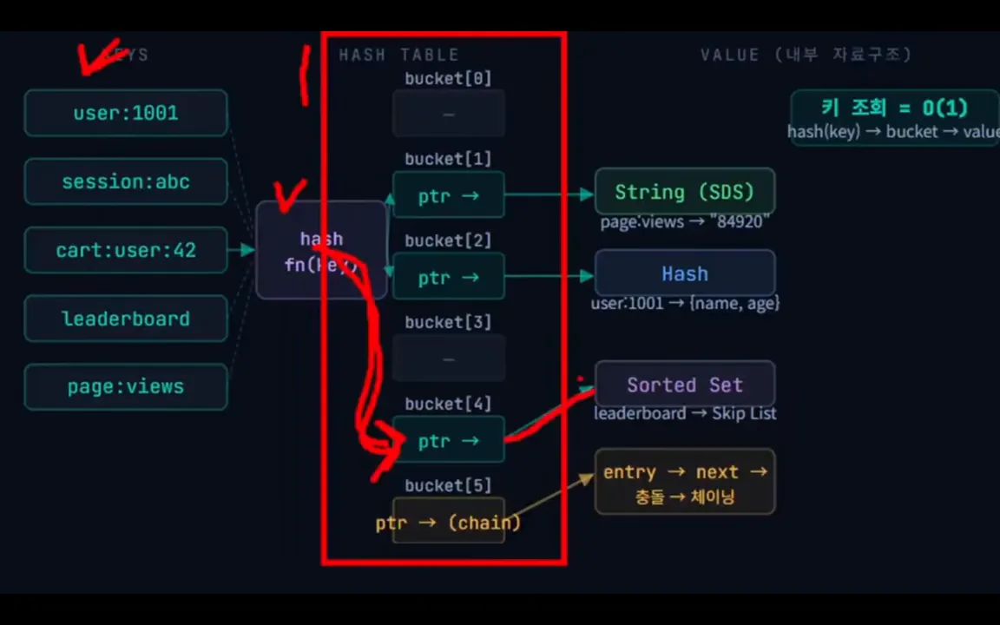
GET, SET 모두 O(1)이에요.
영상 1:12:28에서 보기
내부 타입도 대부분 상수 시간이에요. 표를 보면 String, Hash, Set, List의 대표 연산이 모두 O(1)이고 Sorted Set만 O(log N)이에요. 오른쪽 위 카드는 Sorted Set이 레드블랙 트리 대신 스킵 리스트를 쓴 이유예요. 성능은 비슷한데 구현이 단순하고 범위 조회(ZRANGE)가 직관적이에요. antirez는 "성능 최적이 아닌 단순함을 선택했다"고 했어요.
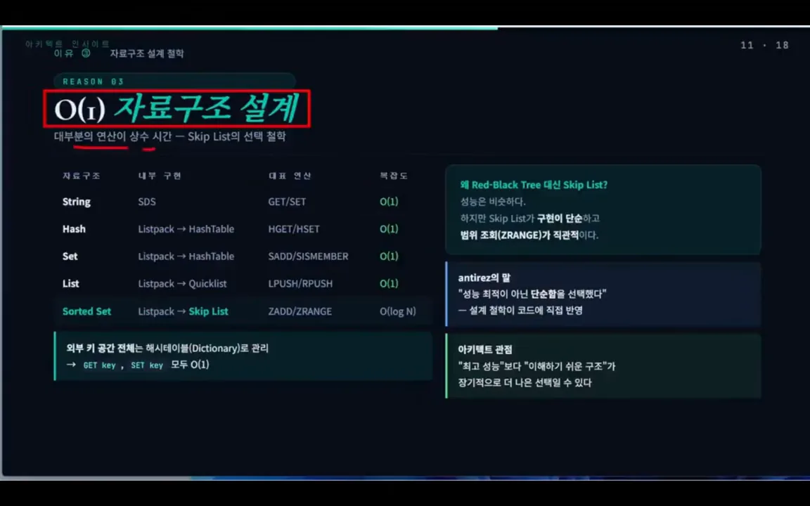
빠른 이유 ④ RESP 프로토콜
RESP는 Redis가 클라이언트와 주고받는 통신 규약이에요. 핵심은 "길이를 먼저 알려 주면 스캔할 필요가 없다"예요. 왼쪽 위 일반 방식(SET,hello,world)은 쉼표가 나올 때까지 한 글자씩 읽어야 하고, 크기를 모르니 버퍼를 미리 잡을 수 없어요. 아래 RESP 방식은 *3(인자 3개), $3 SET, $5 hello, $5 world처럼 길이를 앞에 붙여요. $5를 읽으면 정확히 5바이트만 읽으면 끝이에요. 오른쪽 위처럼 첫 1바이트(+, -, :, $, *)로 타입도 바로 정해져요.
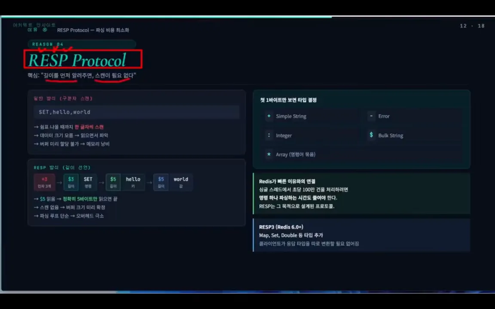
빠른 이유 ⑤ 파이프라인
파이프라인은 여러 명령을 묶어 한 번에 보내는 기능이에요. 묶지 않으면 명령 하나 보내고 응답 받고, 또 보내고 받고를 반복하니 명령마다 네트워크 왕복 시간(RTT(Round-Trip Time))이 붙어요. 묶으면 한 번 보내고 한 번 받아요. 발표자가 든 숫자로 아래 그림을 그렸어요.
슬라이드는 주의점도 짚어요. 파이프라인은 네트워크 최적화일 뿐 원자성은 없어요. 원자적 실행은 마지막 강의의 MULTI/EXEC가 맡아요. 중간에 에러가 나도 나머지 명령은 계속 실행되고 롤백도 없어요.
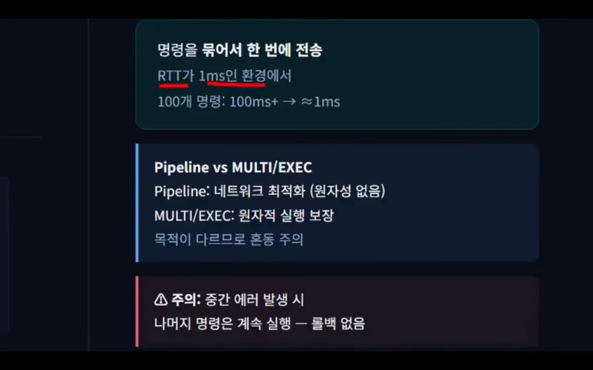
지금도 싱글 스레드일까요
버전별로 보면 조금 달라졌어요. 왼쪽 위 1.x~3.x는 메인 스레드 하나가 I/O, 파싱, 실행, 응답을 전부 했어요. 4.0에서 bio.c 스레드가 생겨 UNLINK(비동기 삭제)와 AOF fsync 같은 느린 디스크 작업을 맡았어요. 그래서 수백만 건을 지워도 메인 스레드가 막히지 않아요. 6.0에서는 소켓 읽기·쓰기를 맡는 I/O 스레드를 N개 둘 수 있는 선택 옵션(io-threads)이 생겼어요. 오른쪽 위처럼 RDB 스냅샷과 AOF 재작성은 fork한 자식 프로세스가 다른 코어에서 해요.
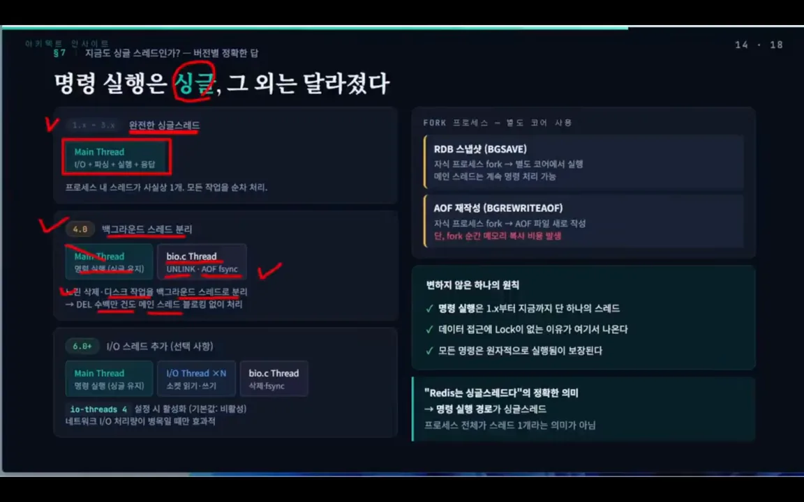
I/O 스레드는 클라이언트가 많거나 응답이 클 때 처리량을 30~60% 올릴 수 있지만, 클라이언트가 적고 명령이 가벼우면 컨텍스트 비용 때문에 오히려 느려질 수 있어요. 발표자는 코어 수보다 1~2개 적게, 예를 들어 8코어면 6이나 7로 시작해 벤치마크로 맞추라고 권해요.
Redis가 느려지는 진짜 이유
마지막 표가 실무 체크포인트예요. KEYS *는 O(N) 전체 스캔이라 서버 전체가 막혀요(SCAN 커서로 교체). 수십만 필드짜리 대형 Hash/List는 명령 처리가 늦어져요(키 샤딩·만료 정책). SMEMBERS로 대형 Set을 통째로 받으면 응답이 커져요(SSCAN). 한 키에 요청이 몰리는 Hot Key는 싱글 스레드를 직격해요(로컬 캐시 계층 추가). AOF를 매 쓰기마다 fsync하면 처리량이 급락하고(everysec 검토), maxmemory를 넘으면 에빅션으로 레이턴시가 튀어요(정책 명시와 용량 계획).
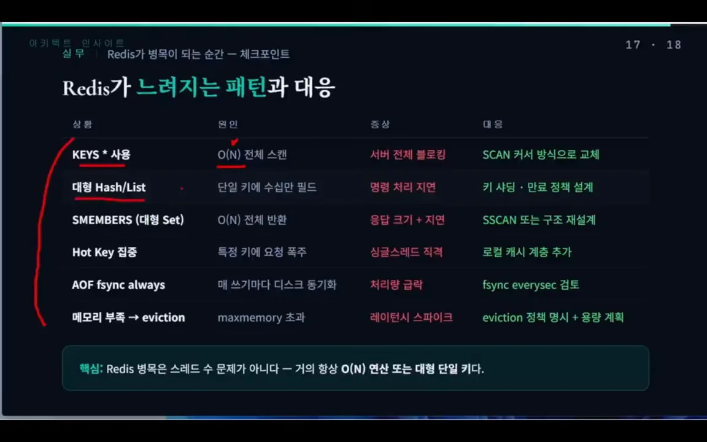
랭킹 조회: MySQL vs Redis와 실시간 랭킹 설계
일곱 번째 강의는 직접 돌려 보는 벤치마크예요. 게임 실시간 랭킹이나 포털 실시간 검색 순위처럼 '몇 등부터 몇 등까지'를 조회하는 기능을 MySQL과 Redis로 비교해요.
왼쪽 MySQL 8.0 카드는 user_id, username, score 컬럼을 가진 테이블에 score 인덱스를 걸고 ORDER BY score DESC LIMIT 10 OFFSET ...으로 조회해요. 오른쪽 Redis 7.0 카드는 Sorted Set에 멤버(사용자)와 점수를 넣고 ZREVRANGE로 조회해요. 데이터는 100만 건이고, 500등 구간이면 501~510등 10명을 가져오는 식으로 90만 등까지 점점 깊이 내려가요.
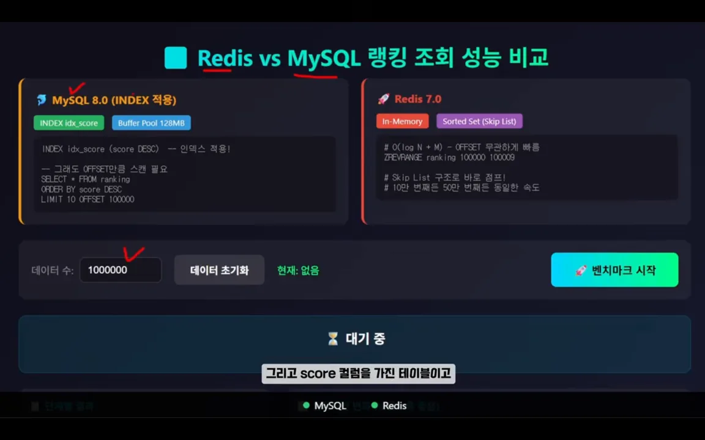
결과 화면의 그래프에서 노란 선이 MySQL, 빨간 선이 Redis예요. 오프셋이 작을 때는 둘이 비슷해요. 5,000등을 넘어가면서 MySQL이 급격히 올라가고, Redis는 바닥에 붙어 거의 그대로예요. 왼쪽 표의 마지막 줄, 오프셋 90만에서 MySQL은 690ms, Redis는 1.9ms로 Redis가 약 354배 빨랐어요.
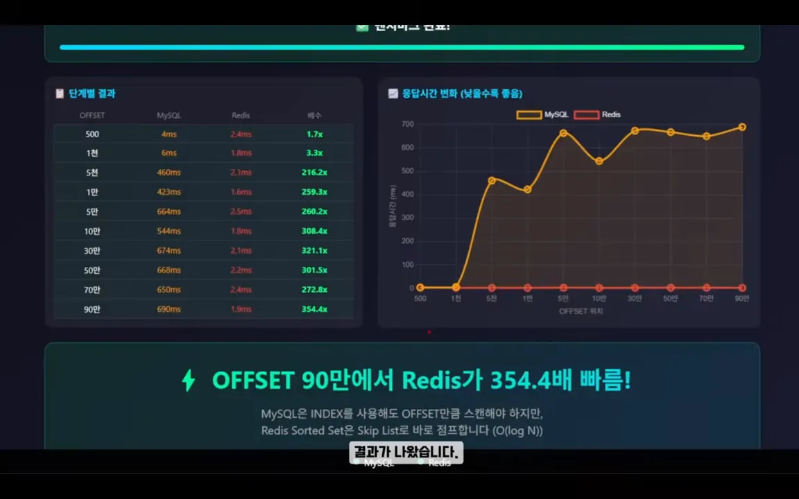
차이의 큰 이유는 메모리와 디스크보다 자료구조예요. MySQL은 인덱스가 있어도 오프셋 90만이면 앞의 90만 건을 세고 건너뛰어야 해요. Redis Sorted Set은 내부의 스킵 리스트로 90만 번째든 100만 번째든 바로 점프해요. 실무에서 페이지가 깊어지거나 랭킹 하위권을 볼 때 MySQL이 느려지는 이유가 이거예요. 발표자는 Sorted Set, List, Hash 같은 자료형을 비즈니스 요건에 맞게 고르면 큰 이점을 얻는다고 정리해요.
설계 퀴즈: 수십만 명의 실시간 랭킹
이어지는 강의는 면접 설계 질문이에요. "수십만 명 규모의 게임 랭킹을 실시간으로 보여 줘야 하고, 순위가 바뀌면 모든 클라이언트에게 즉시 알려야 합니다." 슬라이드 아래 다섯 칸이 풀어야 할 설계 포인트예요. 수십만 명 접속, 실시간 랭킹, 순위 조회, 실시간 알림, 병목이에요.
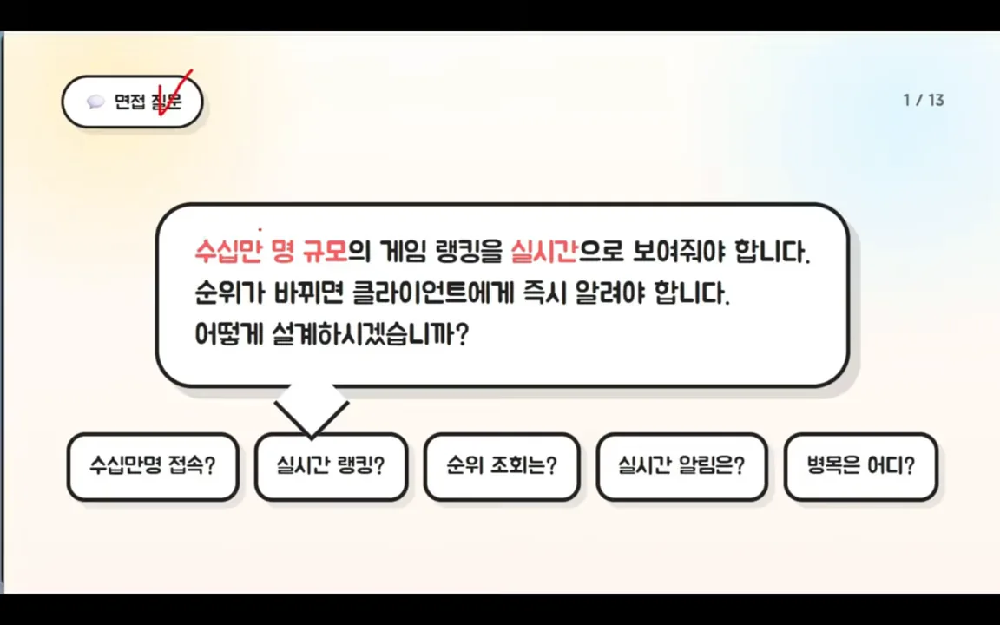
수십만 명이면 서버 한 대로는 안 되니 먼저 로드밸런서와 서버 N대로 요청과 동시 접속을 나눠요. 그다음이 자료구조예요. 발표자는 좋은 아키텍트가 좋은 개발자인 이유가 플랫폼이 주는 자료구조를 알아야 해서라고 해요. 상위 N명, 내 순위, 내 앞뒤 순위, 점수 갱신이라는 요구사항의 답은 Redis Sorted Set이에요. 오른쪽 핵심 명령어처럼 ZADD로 넣고, ZREVRANGE ... WITHSCORES로 상위권을, ZREVRANK로 내 순위를, ZRANGE 범위로 내 근처를 뽑아요.
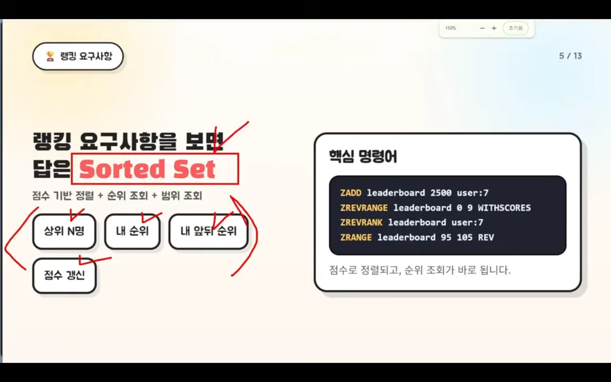
점수가 바뀌면 다시 정렬해야 하죠. Sorted Set은 점수를 바꾸는 순간 정렬 상태를 유지해 줘요. 세 카드처럼 ZINCRBY로 점수를 올리고, 바로 ZREVRANK로 내 순위를, ZREVRANGE 0 99로 상위권을 확인할 수 있어요.
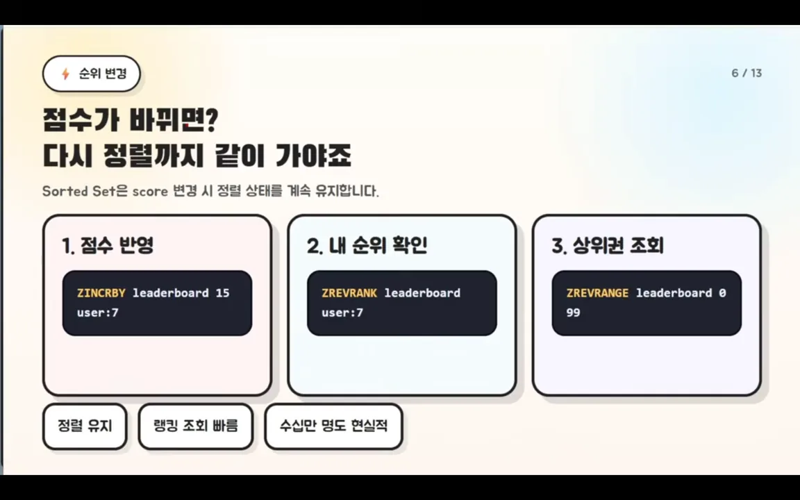
한 서버에서 순위가 바뀌면 다른 서버들도 바로 알아야 해요. 서버 간 알림 채널로는 Redis Pub/Sub을 써요. 점수가 바뀐 서버가 PUBLISH rank:update로 발행하면, 구독(SUBSCRIBE rank:update) 중인 모든 서버가 즉시 받아요.
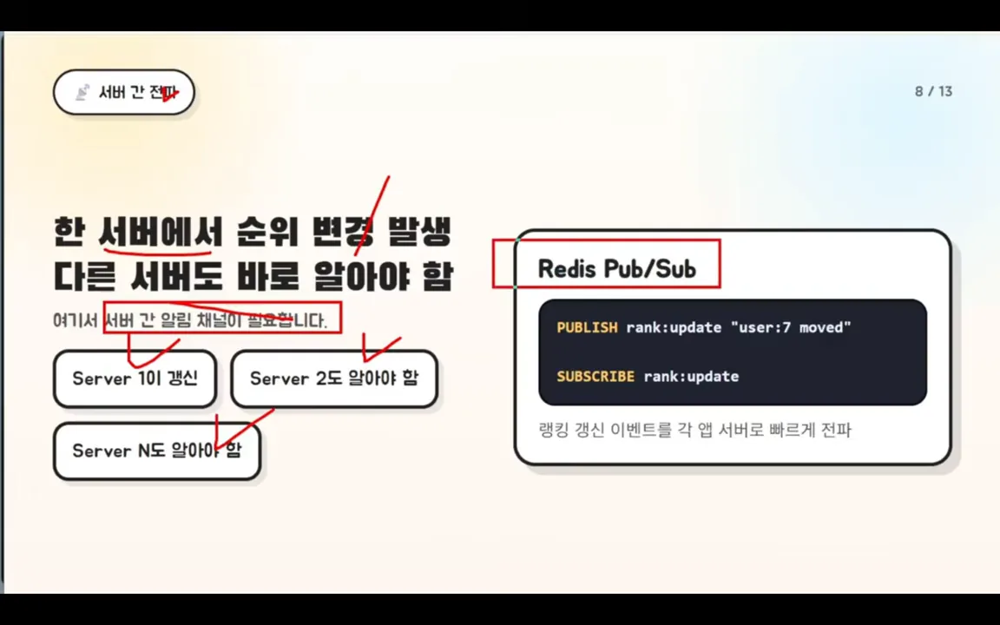
마지막으로 서버가 브라우저에 알려야 해요. 여기에는 SSE(Server-Sent Events)를 써요. HTTP 기반이고 서버에서 클라이언트로 가는 단방향 푸시라 랭킹 알림에 잘 맞아요. 전체 흐름을 한 줄로 보면 N Clients → Load Balancer → N Servers → Redis(Sorted Set)이고, 순위 변경은 Pub/Sub으로 서버에 퍼진 뒤 SSE로 클라이언트에 돌아가요.
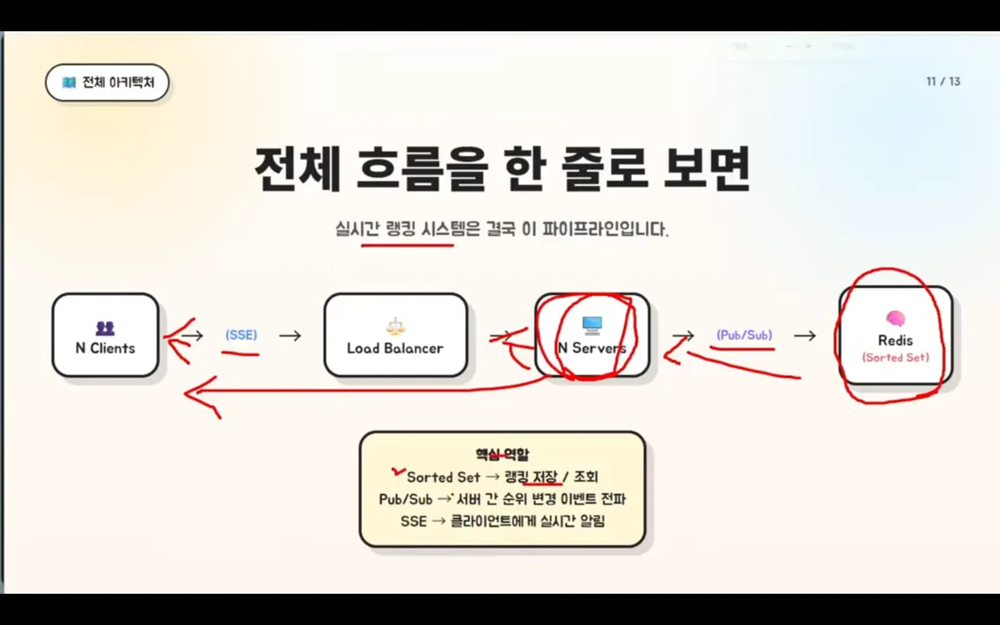
왜 이 조합일까요? 왼쪽 카드의 스킵 리스트는 이진 탐색 트리처럼 검색·삽입·삭제가 평균 O(log N)이에요. 1억 명(N=100,000,000)이어도 log₂ N은 약 26.6이라 27단계 정도면 내 등수를 찾아요. 오른쪽 Pub/Sub은 구현이 단순하고 서버 간 알림에 적합하고 지연이 낮아요. 아래 노란 메모처럼 실무에서는 모든 사용자에게 브로드캐스트하기보다 랭킹 화면을 보고 있는 사용자에게만 푸시하는 경우가 많아요. 발표자의 결론은 "아키텍트는 문제를 제대로 정의하고, 맞는 도구를 골라 복잡한 시스템을 단순한 구조로 풀어내는 사람"이에요.
Redis를 느리게 하는 BigKey와 HotKey
여덟 번째 강의는 Redis를 쓰러뜨리는 두 가지 키예요. 한 줄로 BigKey는 너무 큰 키, HotKey는 너무 몰리는 키예요.
비교 표를 줄별로 보면 차이가 분명해요. BigKey의 본질은 한 번 처리할 때 작업이 무겁다는 거예요. 원소가 계속 쌓이는 Set/Hash/ZSet/List나 큰 String이 대표 예이고, 조회·삭제·복제·영속화 때 블로킹, 메모리 단편화, 네트워크 부하가 생겨요. 싱글 스레드라 한 명령이 오래 걸리면 다른 요청도 다 기다려요. HotKey의 본질은 요청이 한 곳에 집중된다는 거예요. 인기 상품 캐시, 메인 배너, 실시간 랭킹 상위 키가 대표 예이고, 데이터가 작아도 특정 노드의 CPU가 급증하고 네트워크가 막혀요.
찾는 법
redis-cli --bigkeys는 String, List, Set, Hash, ZSet 타입별로 가장 큰 키를 하나씩 보여 줘요. redis-cli --hotkeys는 자주 접근되는 키 후보를 보여 주는데, 메모리 정책이 LFU(Least Frequently Used) 계열일 때만 동작해요. 아래 경고처럼 두 옵션 모두 '이 정도면 위험하다'는 절대 기준값은 없어서 관리자가 결과를 보고 판단해야 해요.
푸는 법
왼쪽 BigKey 해결은 세 가지예요. 데이터 분할은 user:1:orders 하나를 user:1:orders:2024, user:1:orders:2025처럼 연도·월로 쪼개는 거예요. 큰 키를 DEL하면 싱글 스레드가 막히니 Redis 4.0부터 있는 UNLINK로 비동기 삭제해요. 조회도 한 번에 다 가져오지 말고 ZRANGE·LRANGE로 범위를 잘라, Hash는 HSCAN으로 나눠 읽어요. 오른쪽 HotKey 해결도 세 가지예요. 애플리케이션에 Caffeine·Guava 같은 로컬 캐시를 앞에 둬서 Redis에 오는 요청 자체를 줄여요. 같은 데이터를 product:123:1, product:123:2처럼 여러 키로 복제해 랜덤하게 골라 여러 노드로 나눠요. 읽기 전용 레플리카로 읽기 트래픽을 분산해요.
실무 가이드라인 표는 네 줄이에요. 키 설계 단계에서 BigKey는 키 하나가 얼마나 커질지, HotKey는 어느 키에 요청이 몰릴지 미리 예측해요. 컬렉션 정책으로 Set/ZSet/Hash에 최대 n개 같은 상한을 두고, HotKey가 예상되면 처음부터 캐시·샤드·레플리카를 고려해요. TTL로 무한 성장을 막고, HotKey는 만료되는 순간 요청이 DB로 한꺼번에 몰리는 캐시 스탬피드를 대비해요. 운영에서는 slowlog와 두 옵션으로 주기적으로 후보를 확인해요.
발표자의 마무리는 "Redis가 느려질 때는 BigKey인지 HotKey인지 구분해서 보라"예요. 데이터 양이 문제면 쪼개고 작게 읽고 UNLINK로 지우고, 트래픽이 문제면 캐시·샤드·레플리카로 나눠요.
트랜잭션과 메시징, 캐시 너머의 Redis
마지막은 Redis를 캐시 너머로 쓰는 두 강의예요. 먼저 트랜잭션이에요. 초창기부터 있던 기능인데 의외로 모르는 사람이 많다고 해요.
명령이 하나면 이미 안전해요
Redis에는 두 동작을 한 명령으로 합친 원자적 편의 명령이 많아요. 조회와 삭제를 한 번에 하는 GETDEL, 조회하면서 만료 시간을 바꾸는 GETEX가 그래요. 명령이 하나면 중간에 다른 요청이 끼어들 수 없어서 따로 신경 쓸 게 없어요.
문제는 여러 명령이에요. 좋아요를 처리하려면 게시물의 좋아요 수를 올리는 HINCRBY post:1 likes 1과 누른 사람을 목록에 넣는 SADD post:1:likers user42를 둘 다 해야 해요. 슬라이드 아래 흐름처럼 카운트는 101로 올랐는데 중간에 연결이 끊겨 목록에 user42가 빠지면 데이터 일관성이 깨져요.
MULTI / EXEC
그래서 트랜잭션이에요. 명령 A, B, C를 하나의 실행 단위로 묶어요. MULTI로 시작하면 그 뒤의 SET, DEL, INCR 같은 명령은 바로 실행되지 않고 큐에 쌓여요. EXEC을 보내면 쌓인 명령을 순서대로 한 번에 실행하고, 그동안 다른 요청은 끼어들지 못해요. 슬라이드의 '보장해 주는 것' 세 칸이 바로 이거예요. 묶어서 실행, 순서 보장, 중간 간섭 없음이에요.
MULTI가 큐를 열고, EXEC이 한꺼번에 실행해요.
영상 1:34:25에서 보기
WATCH는 낙관적 락
재고를 확인하고 남아 있으면 줄이는 로직을 생각해 봐요. 확인과 감소 사이에 다른 요청이 재고를 먼저 줄일 수 있어요. 슬라이드의 세 칸처럼 요청 A가 WATCH stock:1로 재고 키를 지켜보며 stock=1을 확인하는 동안, 다른 요청이 먼저 값을 1에서 0으로 바꾸면, A의 EXEC은 실패하고 A는 다시 시도해요. 락을 먼저 걸지 않고 쓰는 시점에 충돌을 확인하는 낙관적 락이에요.
한계와 넘는 법
Redis 트랜잭션은 RDBMS(Relational Database Management System) 트랜잭션과 달라요. 세 카드 중 첫째, 중간에 실패해도 롤백이 안 돼요. 한 번에 실행된다는 뜻에서는 원자적이지만 전부 아니면 전무(all-or-nothing)는 아니에요. 둘째, 조건문을 쓸 수 없어요. 셋째, 그래서 복잡한 로직에는 부족해요.
한계를 넘는 도구는 두 가지예요. Lua 스크립트는 조건과 여러 명령을 스크립트 하나로 서버 안에서 한 번에 실행해요. Redis Functions는 그걸 한 단계 발전시켜, RDB의 저장 프로시저처럼 서버에 함수로 등록해 두고 재사용하는 서버사이드 코드예요. 정리하면 명령이 하나면 그냥 쓰고, 여러 개가 함께 동작해야 하면 트랜잭션, 조건을 보고 다음 행동을 정해야 하면 Lua나 Functions예요.
Redis 메시징: Pub/Sub과 Streams
마지막 강의는 "Redis를 아직 캐시로만 쓰고 있나요?"라는 질문으로 시작해요. 타임라인을 보면 2009년 인메모리 키-값 저장소로 태어났고, 2018년 5.0에서 Streams가 들어와 메시지 저장과 컨슈머 그룹이 생겼어요. 2025년 Redis 8 정식판에서는 JSON(JavaScript Object Notation), 검색, 시계열 같은 Redis Stack 기능이 기본 배포판에 합쳐졌어요. 발표자는 이제 Redis를 실시간 데이터 플랫폼이라고 불러요.
메시징 시스템은 주문 서비스가 알림·결제·로그 서비스를 직접 부르지 않고 중간의 메시지 브로커를 거치는 구조예요. 세 카드처럼 서비스끼리 느슨하게 결합되고, 비동기 처리로 응답 지연과 병목을 줄이고, 작업을 나누고 소비자를 늘리기 쉬워 확장에 유리해요.
Redis 메시징의 시작은 Pub/Sub이에요. Publisher가 Channel에 메시지를 발행하면, 그 채널을 구독 중인 모든 Subscriber에게 전달돼요. 메모리 기반이라 지연이 매우 낮고, 채팅 알림이나 실시간 이벤트 전파 같은 방송형 용도에 맞아요. 아래 코드처럼 PUBLISH system:notices "deploy complete"로 발행하고 SUBSCRIBE system:notices로 구독해요.
하지만 세 가지 한계가 있어요. 구독자가 오프라인이면 그 순간의 메시지를 못 받고, 메시지를 저장하지 않으니 나중에 다시 조회할 수 없고, 처리 완료(ack)나 대기(pending)를 관리하지 않아서 재처리가 안 돼요. 그래서 나온 게 Streams예요. 아래 코드처럼 XADD로 기록하고, XGROUP CREATE로 컨슈머 그룹을 만들고, XREADGROUP으로 그룹이 나눠 읽어요.
Streams는 '저장되는 메시징'이에요. 세 카드처럼 메시지를 로그처럼 남겨 나중에도 읽을 수 있고, 컨슈머 그룹으로 여러 워커가 메시지를 나눠 처리하고, 처리 완료와 대기 중인 메시지를 추적할 수 있어요. 아래 흐름은 Producer가 이벤트를 기록하면 Consumer Group이 나눠 가져가고 ACK(Acknowledgement)로 처리 완료를 확인하는 순서예요.
비교표를 줄별로 보면, 메시지 저장은 Pub/Sub 없음 대 Streams 있음, 오프라인 소비자는 놓치면 끝 대 나중에 읽기 가능, 재처리는 불가 대 가능, Consumer 관리는 없음 대 Consumer Group이에요. 대표 용도는 실시간 알림·방송 대 작업 큐·이벤트 파이프라인이에요. 한 줄로 Pub/Sub은 실시간 방송, Streams는 큐와 로그예요.
실무 예시는 여섯 칸이에요. 지금 접속 중인 사용자에게 즉시 알리는 채팅·알림은 Pub/Sub, 주문 완료 후 포인트 적립과 문자 발송 같은 후처리는 Streams, 애플리케이션 이벤트를 쌓고 별도 소비자가 저장하는 로그 파이프라인도 Streams, 썸네일·리포트 생성과 대량 알림 같은 백그라운드 작업 큐는 Streams와 컨슈머 그룹, 상태 변경을 운영 대시보드에 바로 보여 주는 실시간 대시보드는 Pub/Sub이에요. 실무에서는 즉시 알림은 Pub/Sub, 중요한 작업은 Streams로 나눠 하이브리드로 써요.